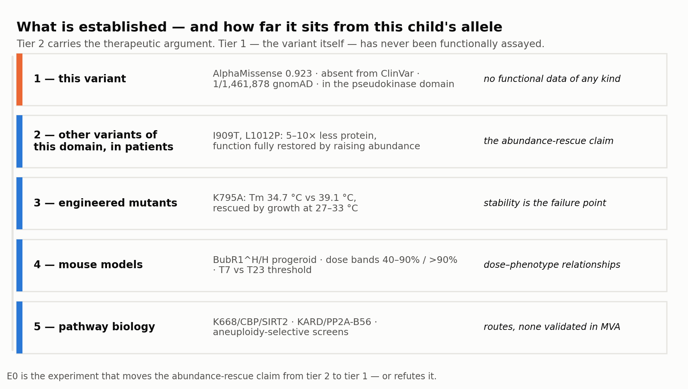
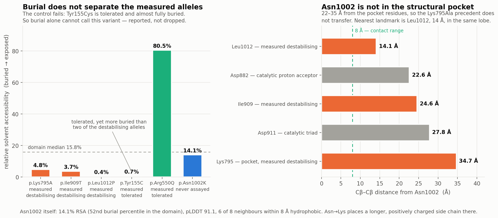
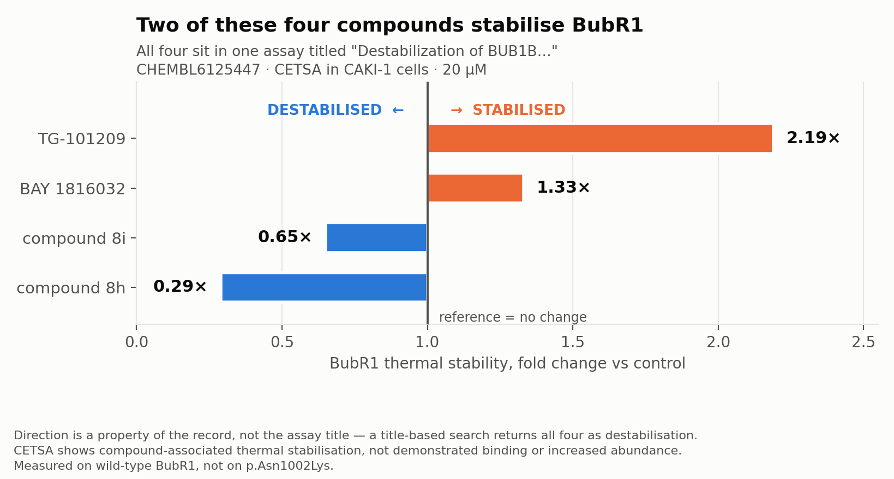
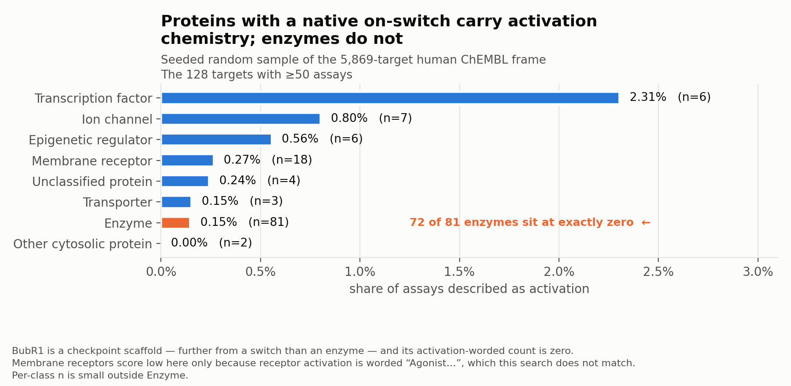
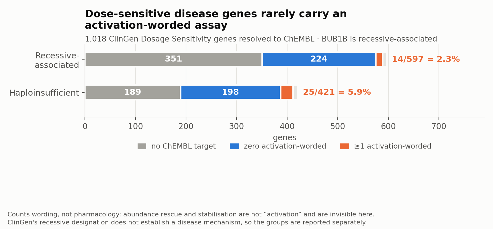
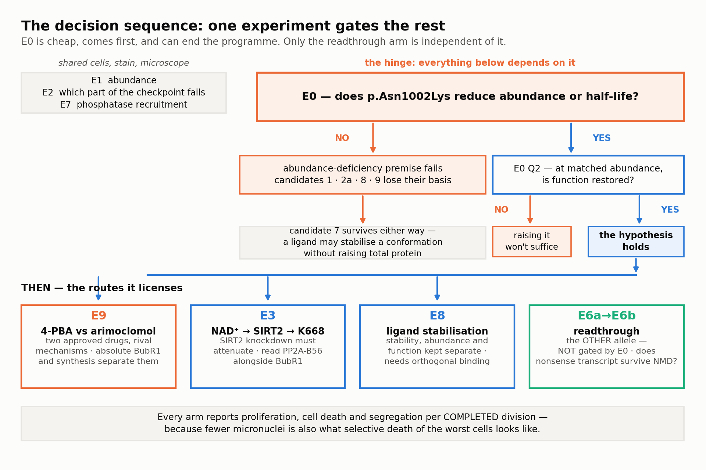
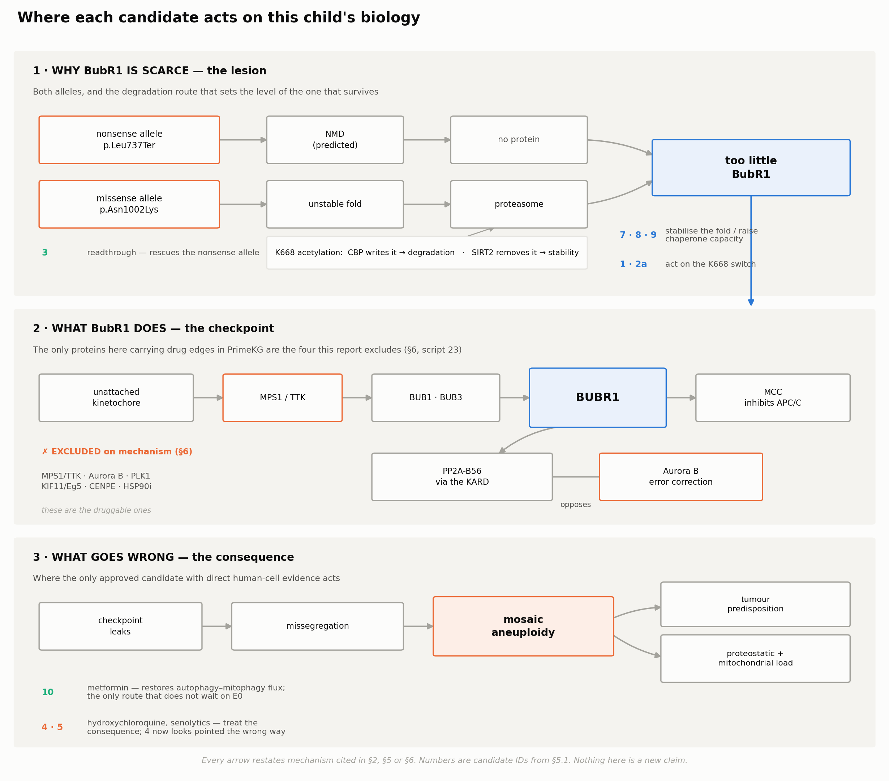

<title>BubR1 Repurposing Dossier</title>
<meta name="claude:viewport-fit-sides" content="cover">
<link rel="preconnect" href="https://fonts.gstatic.com" crossorigin>
<link rel="stylesheet" href="https://fonts.googleapis.com/css2?family=IBM+Plex+Sans:ital,wght@0,400;0,500;0,600;1,400&family=IBM+Plex+Mono:wght@400;500&family=Source+Serif+4:ital,opsz,wght@0,8..60,400;0,8..60,600;1,8..60,400&display=swap">
<style>
/* Layout: one reading column with a sticky section rail; figures and tables
   break wider than the measure. Palette keyed to the committed figure PNGs. */
:root {
  --paper:#fbfbfa; --panel:#f3f3f1; --rule:#e0e0dc;
  --ink:#1a1b1a; --ink-2:#55574f; --ink-3:#83857c;
  --accent:#1f5fab; --accent-soft:#e8eff8;
  --warn:#c2521f; --warn-soft:#fbeadf;
  --ok:#17795a;
  --sans:"IBM Plex Sans",system-ui,-apple-system,"Segoe UI",sans-serif;
  --serif:"Source Serif 4",Georgia,"Times New Roman",serif;
  --mono:"IBM Plex Mono",ui-monospace,"SF Mono",Menlo,monospace;
  --measure:70ch;
  color-scheme:light;
}
@media (prefers-color-scheme:dark){ :root:not([data-theme="light"]){
  --paper:#15161a; --panel:#1d1f24; --rule:#30333a;
  --ink:#e9eaec; --ink-2:#a9adb6; --ink-3:#7d818b;
  --accent:#6fa8ea; --accent-soft:#1a2738;
  --warn:#f08a56; --warn-soft:#2e2019;
  --ok:#49c49b;
  color-scheme:dark;
}}
:root[data-theme="dark"]{
  --paper:#15161a; --panel:#1d1f24; --rule:#30333a;
  --ink:#e9eaec; --ink-2:#a9adb6; --ink-3:#7d818b;
  --accent:#6fa8ea; --accent-soft:#1a2738;
  --warn:#f08a56; --warn-soft:#2e2019;
  --ok:#49c49b;
  color-scheme:dark;
}
*{box-sizing:border-box}
body{background:var(--paper);color:var(--ink);font-family:var(--serif);
  font-size:17px;line-height:1.62;-webkit-text-size-adjust:100%}
body::before{content:"";position:fixed;inset:0 0 auto;
  height:env(safe-area-inset-top,0px);background:var(--paper);z-index:20}
.gutter{padding-left:max(18px,env(safe-area-inset-left,0px));
  padding-right:max(18px,env(safe-area-inset-right,0px))}
.wrap{max-width:var(--measure);margin:0 auto}
a{color:var(--accent);text-underline-offset:2px;
  text-decoration-color:color-mix(in srgb,var(--accent) 35%,transparent)}
a:hover{text-decoration-color:var(--accent)}
:focus-visible{outline:2px solid var(--accent);outline-offset:3px;border-radius:2px}
code{font-family:var(--mono);font-size:.86em;background:var(--panel);
  padding:.08em .34em;border-radius:3px;color:var(--ink-2);
  word-break:break-word}
strong{font-weight:600}

/* ---- masthead ---- */
.hero{border-bottom:1px solid var(--rule);padding-block:34px 26px}
.eyebrow{font-family:var(--sans);font-size:11.5px;font-weight:600;
  letter-spacing:.1em;text-transform:uppercase;color:var(--ink-3);
  margin:0 0 14px}
h1{font-family:var(--sans);font-weight:600;font-size:clamp(28px,6.2vw,42px);
  line-height:1.1;letter-spacing:-.02em;margin:0;text-wrap:balance}
.dek{font-size:clamp(17px,2.6vw,19.5px);color:var(--ink-2);margin:14px 0 0;
  max-width:62ch}
.meta{display:flex;flex-wrap:wrap;gap:6px 16px;margin-top:20px;
  font-family:var(--sans);font-size:12.5px;color:var(--ink-3)}
.meta b{font-weight:500;color:var(--ink-2)}
.facts{display:grid;grid-template-columns:repeat(auto-fit,minmax(118px,1fr));
  gap:14px 20px;margin-top:26px;padding-top:20px;border-top:1px solid var(--rule)}
.fact .n{font-family:var(--sans);font-weight:600;font-size:21px;
  font-variant-numeric:tabular-nums;letter-spacing:-.01em;display:block}
.fact .l{font-family:var(--sans);font-size:11.5px;line-height:1.35;
  color:var(--ink-3);display:block;margin-top:3px}
.fact.neg .n{color:var(--warn)}

/* ---- section rail ---- */
nav{position:sticky;top:env(safe-area-inset-top,0px);z-index:19;
  background:color-mix(in srgb,var(--paper) 92%,transparent);
  backdrop-filter:saturate(1.6) blur(8px);
  border-bottom:1px solid var(--rule)}
.navscroll{display:flex;gap:2px;overflow-x:auto;scrollbar-width:none;
  padding-block:9px;max-width:var(--measure);margin:0 auto}
.navscroll::-webkit-scrollbar{display:none}
nav a{font-family:var(--sans);font-size:12px;font-weight:500;
  white-space:nowrap;padding:5px 9px;border-radius:5px;color:var(--ink-2);
  text-decoration:none}
nav a:hover{background:var(--panel);color:var(--ink)}

/* ---- prose ---- */
main{padding-block:8px 60px}
section{padding-block:34px 4px;border-top:1px solid var(--rule)}
section:first-of-type{border-top:0}
h2{font-family:var(--sans);font-weight:600;font-size:clamp(21px,3.4vw,25px);
  line-height:1.22;letter-spacing:-.015em;margin:0 0 18px;text-wrap:balance;
  scroll-margin-top:72px}
h3{font-family:var(--sans);font-weight:600;font-size:17.5px;line-height:1.3;
  margin:36px 0 14px;text-wrap:balance;scroll-margin-top:72px}
.hn{font-family:var(--mono);font-weight:400;color:var(--accent);
  font-size:.78em;margin-right:.7em;letter-spacing:0}
h2 .hn:empty,h3 .hn:empty{display:none}
p{margin:0 0 15px}
ol,ul{margin:0 0 16px;padding-left:1.35em}
li{margin-bottom:9px}
ol li::marker{font-family:var(--sans);font-weight:600;color:var(--accent);
  font-size:.9em}
ul.refs{list-style:none;padding-left:0;font-size:14.5px;
  column-gap:34px;color:var(--ink-2)}
ul.refs li{margin-bottom:11px;padding-left:1.1em;text-indent:-1.1em;
  line-height:1.45;overflow-wrap:break-word}

/* ---- callouts ---- */
aside.note{background:var(--panel);border-left:3px solid var(--accent);
  border-radius:0 6px 6px 0;padding:15px 18px;margin:0 0 18px}
aside.note p{margin:0 0 9px}
aside.note p:last-child{margin:0}
aside.note.warn{background:var(--warn-soft);border-left-color:var(--warn)}
.note-h{font-family:var(--sans);font-weight:600;font-size:15.5px}

/* ---- figures ---- */
figure{margin:26px 0 24px}
figure img{display:block;width:100%;max-width:100%;height:auto;
  border:1px solid var(--rule);border-radius:7px;background:#fcfcfb}
figcaption{font-family:var(--sans);font-size:12px;color:var(--ink-3);
  margin-top:9px;line-height:1.4}

/* ---- tables ---- */
.scroll{overflow-x:auto;-webkit-overflow-scrolling:touch;margin:0 0 20px;
  border:1px solid var(--rule);border-radius:7px;min-width:0}
table.tbl{border-collapse:collapse;width:100%;min-width:560px;
  font-family:var(--sans);font-size:13.2px;line-height:1.48}
table.tbl th{text-align:left;font-weight:600;font-size:11.5px;
  letter-spacing:.045em;text-transform:uppercase;color:var(--ink-3);
  background:var(--panel);padding:9px 12px;border-bottom:1px solid var(--rule);
  white-space:nowrap;vertical-align:bottom}
table.tbl td{padding:11px 12px;border-bottom:1px solid var(--rule);
  vertical-align:top;color:var(--ink-2)}
table.tbl tbody tr:last-child td{border-bottom:0}
table.tbl td strong{color:var(--ink)}
table.tbl td code{font-size:.84em}
table.scored td:nth-child(5),table.scored td:nth-child(6),
table.scored td:nth-child(7){text-align:center;font-variant-numeric:tabular-nums;
  font-weight:600;color:var(--ink);white-space:nowrap}
table.scored td:nth-child(1),table.scored td:nth-child(3){text-align:center;
  font-weight:600;color:var(--ink);white-space:nowrap}
table.decision td:first-child{font-weight:600;color:var(--ink);
  white-space:nowrap}
pre.ascii{font-family:var(--mono);font-size:12px;line-height:1.5;margin:0;
  padding:16px;color:var(--ink-2);white-space:pre;tab-size:2}

/* ---- footer ---- */
footer{border-top:1px solid var(--rule);padding-block:24px 40px;
  font-family:var(--sans);font-size:12.5px;color:var(--ink-3)}
footer p{margin:0 0 7px;max-width:68ch}

@media (max-width:640px){
  body{font-size:16px}
  .facts{grid-template-columns:repeat(2,1fr)}
}
@media (prefers-reduced-motion:reduce){
  *{animation:none!important;transition:none!important;scroll-behavior:auto!important}
}
html{scroll-behavior:smooth}
</style>

<header class="hero gutter">
  <div class="wrap">
    <p class="eyebrow">Rare Disease, Real Kid · MVA Hackathon 2026 · Track 2</p>
    <h1>Mechanism and Drug Repurposing in <em>BUB1B</em>-associated MVA</h1>
    <p class="dek">Genotype-specific repurposing for a child with biallelic <em>BUB1B</em>: record-level assay evidence to choose candidates, and functional tests to separate restored accurate division from raised protein abundance, suppressed proliferation, or selective loss of the worst cells.</p>
    <div class="meta">
      <span>proband <b>PROBAND01</b></span>
      <span>Daniel Hwang · building on team <b>texdata</b></span>
      <span><b>24 October 2026</b></span>
      <span>code: <code>mva/track2/</code></span>
    </div>
    <div class="facts">
      <div class="fact"><span class="n">10</span><span class="l">experiments, E0&ndash;E9</span></div>
      <div class="fact"><span class="n">11</span><span class="l">candidates scored on four axes</span></div>
      <div class="fact"><span class="n">1,018</span><span class="l">ClinGen genes surveyed</span></div>
      <div class="fact"><span class="n">42:1</span><span class="l">inhibition to activation in ChEMBL</span></div>
      <div class="fact neg"><span class="n">0</span><span class="l">decision changes that survived adjudication</span></div>
    </div>
  </div>
</header>

<nav class="gutter"><div class="navscroll"><a href="#s1">1 · The lesion</a><a href="#s2">2 · Mechanism: a folding problem, and a premise already tested</a><a href="#s3">3 · What the computational layer contributed</a><a href="#s4">4 · Chemical matter that points the right way, and how it was found</a><a href="#s5">5 · Candidates</a><a href="#s6">6 · What to avoid, and why</a><a href="#s7">7 · What would settle this</a><a href="#s8">8 · What is actionable now, with no new science</a><a href="#s9">9 · From one genotype to a therapeutic hierarchy</a><a href="#s10">10 · Methods, software and AI disclosure</a><a href="#s11">11 · References</a><a href="#app-a">Appendix A — Pharmacogenomics from the diagnostic genome</a><a href="#app-b">Appendix B — Genomic correction: which allele to edit</a><a href="#app-c">Appendix C — Corrections</a></div></nav>

<main class="gutter"><div class="wrap">
<section id="s1">
<h2><span class="hn">1</span>The lesion</h2>
<p><em>BUB1B</em> encodes <strong>BubR1</strong>, 1050 aa (<a href="https://rest.uniprot.org/uniprotkb/O60566">UniProt O60566</a>): BUB1 N-terminal domain 62–226, <strong>pseudokinase domain 766–1050</strong>, D882 annotated as catalytic proton acceptor.</p>
<div class="scroll"><table class="tbl"><thead><tr><th>Allele</th><th>Consequence</th></tr></thead><tbody><tr><td><strong><code>p.Leu737Ter</code></strong> (<code>c.2210T&gt;G</code>)</td><td>Stops after residue 736, losing <strong>314 of 1050 residues</strong> — the entire pseudokinase domain. PTC <strong>746 nt upstream</strong> of the final junction, far past the 50–55 nt rule. <strong>NMD predicted</strong>, and measured at the <em>neighbouring</em> allele (386X undetectable, 731X reduced two-fold, both expressed when NMD is bypassed — <a href="https://pubmed.ncbi.nlm.nih.gov/20516114/">Suijkerbuijk 2010</a>). <strong>Residual transcript and protein here are unmeasured.</strong></td></tr><tr><td><strong><code>p.Asn1002Lys</code></strong> (<code>c.3006T&gt;G</code>)</td><td>Full length, inside the pseudokinase domain. AlphaMissense <strong>0.923</strong>, MVP 0.852; REVEL <strong>0.472</strong>, which sits in ClinGen's indeterminate band (0.290–0.644) and is reported rather than averaged away. <strong>1 allele in 1,461,878</strong> gnomAD v4 exomes.</td></tr></tbody></table></div>
<p><strong>Database status of allele B.</strong> <code>c.3006T&gt;G</code> is <strong>not in ClinVar</strong>; ClinVar holds <code>c.3006T&gt;**A**</code> — a different nucleotide encoding the same residue — as a single-submitter <strong>VUS</strong>. The genotype is confirmed by the answer key, not a database; the mechanistic argument rests on allele <em>class</em> (§2).</p>
<p>Reduced BubR1 → checkpoint leaks → missegregation → mosaic aneuploidy and tumour predisposition. <code>BubR1^H/H</code> mice are <strong>progeroid</strong> — growth retardation, sarcopenia, fat loss — this proband's phenotype.</p>
</section>
<section id="s2">
<h2><span class="hn">2</span>Mechanism: a folding problem, and a premise already tested</h2>
<p><strong>The domain is a pseudokinase, and the word is load-bearing.</strong> BubR1 keeps the full catalytic triad (K795, D882, D911) yet phosphorylates nothing; the Gly-rich and catalytic loops are degenerate, <strong>Ser884</strong> replacing the canonical lysine (<a href="https://pubmed.ncbi.nlm.nih.gov/22698286/">Suijkerbuijk 2012</a>), and D882N/A <em>"did not affect BUBR1 function"</em>. <em>Consensus with a live dissent:</em> <a href="https://pubmed.ncbi.nlm.nih.gov/31201382/">Huang 2019</a> reports activity in <strong>Drosophila</strong>, the one lineage whose motifs have not degenerated.</p>
<p><strong>Those pocket residues are structural, and the fold fails without them.</strong> K795A denatures at <strong>34.7 °C against 39.1 °C</strong> for wild type, and <em>"growth of K795A-expressing cells at 27 °C or 33 °C for 24 hr restored protein levels of the K795A mutant, and checkpoint function of these cells."</em> <strong>Cooling fixes them</strong> — the precedent candidate 7 rests on.</p>
<p><strong>The report's premise was measured, in MVA patient alleles, in human cells:</strong></p>
<aside class="note"><p><em>"Forced overexpression of the poorly expressed substitution mutants <strong>I909T and L1012P</strong> to levels comparable to wild-type BUBR1 <strong>fully restored the response to nocodazole</strong>. This showed that these mutations do not impose significant constraints on BUBR1 function other than affecting overall BUBR1 protein abundance."</em> — Suijkerbuijk 2010</p></aside>
<p>Both are pseudokinase-domain missense alleles, the class of <code>p.Asn1002Lys</code>. <strong>Restore the level, restore the function.</strong> The same paper shows why levels are low: every MVA substitution in or near the domain lost <strong>5–10 fold</strong> of protein while the two outside it did not; HSP90 inhibition <em>"severely decreased"</em> mutant levels while barely touching wild type, and MG132 prevented it. <strong>A destabilised fold, cleared by the proteasome.</strong></p>
<p><strong>The dose–response is steep where it matters.</strong> ~<strong>6%</strong> of normal BubR1 caused missegregation in most cells; ~<strong>13%</strong> had <em>"virtually no impact"</em>. In vivo a <strong>40–90%</strong> reduction gives tumour predisposition or mild ageing, <strong>&gt;90%</strong> progeroid phenotypes or early lethality (<a href="https://pubmed.ncbi.nlm.nih.gov/31738183/">van Ree 2020</a>). Cutting the other way, Baker's <strong>T7 line (moderate) failed at everything</strong> and only <strong>T23 (~10-fold)</strong> worked (<a href="https://pubmed.ncbi.nlm.nih.gov/23242215/">Baker 2013</a>) — but that measures <strong>extra expression above normal</strong>, not <strong>rescue of a deficiency</strong>. The two bracket a real uncertainty and <strong>nobody has measured where this genotype sits</strong> (E1, E3). Neither answers a third question: even at T23 <strong>cataractogenesis was not delayed</strong>, and cataracts are a core MVA1 phenotype.</p>
<h3 id="s2-0"><span class="hn">2.0</span>What is actually evidenced, and at what distance from this child</h3>
<figure><figcaption>Evidence tiers</figcaption></figure>
<p>A reader should be able to tell which tier any claim sits in. <strong>No functional experiment in the literature has tested <code>p.Asn1002Lys</code>.</strong></p>
<div class="scroll"><table class="tbl"><thead><tr><th>Tier</th><th>Evidence</th><th>What it supports</th></tr></thead><tbody><tr><td><strong>1 — this variant</strong></td><td>AlphaMissense 0.923; REVEL 0.472; absent from ClinVar; 1/1,461,878 gnomAD; <strong>structural placement in the AlphaFold fold</strong> (below)</td><td>Rarity, a computational prior, and a <strong>structural</strong> prior. Still <strong>no functional data of any kind</strong></td></tr><tr><td>*<em>2 — other pseudokinase-domain </em>BUB1B<em> variants in patients</em>*</td><td>I909T, L1012P and others: 5–10 fold reduced protein, <strong>function fully restored by raising abundance</strong>; outside-domain variants unaffected; HSP90-dependent, proteasome-cleared</td><td><strong>The abundance-rescue hypothesis</strong> — the strongest tier, and about the allele <em>class</em>, not this allele</td></tr><tr><td>*<em>3 — engineered </em>BUB1B<em> mutants</em>*</td><td>K795A: Tm 34.7 °C vs 39.1 °C; rescued by growth at 27–33 °C</td><td>That the domain's stability is the failure point, and that stabilisation can rescue it</td></tr><tr><td><strong>4 — mouse models</strong></td><td><code>BubR1^H/H</code> progeroid; <code>X753/L1002P</code> early embryonic lethal (modelling human <strong>L1012P</strong>, not N1002K); dose bands 40–90% / &gt;90%; T7 vs T23</td><td>Dose–phenotype relationships, species discordance stated</td></tr><tr><td><strong>5 — pathway and general biology</strong></td><td>K668/CBP/SIRT2; KARD/PP2A-B56; aneuploidy-selective screens; senolytics</td><td>Mechanistic routes, none validated in MVA</td></tr></tbody></table></div>
<p><strong>The first variant-specific evidence is structural</strong> (<code>21</code>). A pathogenicity score is not a stability score — AlphaMissense 0.923 says <em>likely pathogenic</em>, not <em>destabilised fold</em> — so the variant was placed in the AlphaFold model of BubR1 against a calibration set of <em>BUB1B</em> alleles whose behaviour is <strong>measured</strong>: destabilising <code>K795A</code>, <code>I909T</code>, <code>L1012P</code>; tolerated <code>Y155C</code>, <code>R550Q</code>.</p>
<figure><figcaption>Structural context of Asn1002</figcaption></figure>
<p><strong>The calibration fails its own control, and that is the first thing to report.</strong> <code>Y155C</code> is <strong>tolerated at 0.7% relative solvent accessibility</strong> — more buried than two of the three destabilising alleles — because it sits in the core of a <em>different</em> domain. Both tolerated alleles lie outside the pseudokinase domain, so <strong>there is no tolerated control inside it</strong>. Burial cannot call this variant, and nothing is predicted from it.</p>
<p><strong>A ΔΔG predictor then failed the same control, on the same residue</strong> (<code>26</code>). DDGun was chosen because it is <strong>untrained</strong> — no parameters fitted to any experimental ΔΔG set, so it cannot have memorised these alleles and the controls mean what they appear to mean. It scores the measured-<strong>destabilising</strong> set at <strong>+0.04, −4.41, −4.44</strong> kcal/mol and the measured-<strong>tolerated</strong> set at <strong>−4.71, −0.61</strong>. The ranges overlap completely: it calls <code>K795A</code> neutral when that mutant's melting temperature is measurably <strong>4.4 °C lower</strong>, and calls tolerated <code>Y155C</code> the most destabilising of all six. <code>p.Asn1002Lys</code> scores <strong>−1.70</strong> — inside the destabilising span, and equally inside the tolerated one.</p>
<aside class="note"><p><strong>So no computational claim about this variant's stability is available.</strong> Two methods that share no machinery — solvent geometry and an untrained sequence-profile ΔΔG — both fail, and <strong>both fail on <code>Y155C</code></strong>: a buried, conserved residue whose substitution is nonetheless tolerated. That is a property of this protein, not a coincidence of one tool. It does not weaken <strong>E0</strong>; it <strong>closes the shortcut around it</strong>.</p></aside>
<p><strong>What the structure does say.</strong> <code>p.Asn1002Lys</code> sits at <strong>14.1% RSA</strong>, the <strong>52nd</strong> burial percentile of its own domain, at <strong>pLDDT 91</strong>, with <strong>6 of 8 neighbours within 8 Å hydrophobic</strong> — and Asn→Lys puts a longer, <strong>positively charged</strong> side chain there. A recognised destabilising configuration, and still a prior rather than a result.</p>
<p>One reading cuts against the report and one does not. It <strong>is</strong> less buried and less packed than all three measured destabilising alleles, and that stands. But <strong>distance from the catalytic pocket does not discriminate</strong>: <code>L1012P</code> is <em>measured destabilising</em> and sits <strong>17.7 Å</strong> from the nearest pocket residue, against N1002's <strong>22.6 Å</strong>, while <em>tolerated</em> <code>Y155C</code> is <strong>67 Å</strong> away. The in-domain alleles and this variant form one spatial series — K795 → 11.9 Å → I909 → 14.0 Å → L1012 → 14.1 Å → N1002 — so sitting distal to the pocket is <strong>compatible with destabilisation, not evidence against it</strong>.</p>
<p><strong>The central claim, at the strength it has:</strong> <code>p.Asn1002Lys</code> has a <strong>plausible abundance-rescue mechanism requiring variant-specific testing</strong>. Neither that it destabilises the protein nor that raising abundance restores function is established — both remain tier-2 inferences about its class, now carrying a structural prior <strong>consistent with them but weaker than they are</strong>. <strong>E0 moves them to tier 1, and this makes E0 more necessary, not less.</strong></p>
<h3 id="s2-1"><span class="hn">2.1</span>A second defect, and a constraint it puts on candidates 1 and 2</h3>
<p>The pseudokinase domain scaffolds <strong>PP2A-B56</strong> through the KARD, and PP2A-B56 opposes Aurora B to silence the checkpoint. <a href="https://pubmed.ncbi.nlm.nih.gov/33207204/">Gama Braga 2020</a> shows the domain is required to promote KARD phosphorylation, with <em>"errors in chromosome alignment as a result of imbalance in Aurora B activity"</em>. The mechanism is <strong>indirect and conformational</strong> (PLK1 polo-box binding is intact), the effect modest (50% mitotic exit at ~35 min versus 55–65), the work <strong>HeLa only</strong>. So this genotype plausibly has <strong>two</strong> defects — quantitative from the null allele, qualitative from the missense — though <em>nobody has assayed <code>p.Asn1002Lys</code>, and Gama Braga tested MVA alleles for stability only.</em></p>
<p><strong>BubR1 abundance is set by acetylation at K668.</strong> <strong>CBP</strong> acetylates it, priming proteasomal degradation; <strong>SIRT2</strong> removes the mark and stabilises the protein (<a href="https://pubmed.ncbi.nlm.nih.gov/24825348/">North 2014</a>). GCN5, PCAF and <strong>p300</strong> had no effect — only CBP. A <strong>second, distinct</strong> site, <strong>K250</strong>, is protective and written by <strong>PCAF</strong> (<a href="https://pubmed.ncbi.nlm.nih.gov/19407811/">Choi 2009</a>). <em>"Activate SIRT2 → more BubR1 → better checkpoint" compresses two context-dependent axes into one, which is why <strong>E3</strong> reads K668 specifically and PP2A-B56 alongside.</em></p>
<aside class="note"><p><strong>K668 is also a direct PP2A-B56 contact residue.</strong> Residues 662–682 carry the B56 <strong>LxxIxE</strong> docking motif, and <a href="https://pubmed.ncbi.nlm.nih.gov/33892776/">Bloom &amp; North 2021</a> name <em>"K668, L669, I672 and E674"</em> as physically interacting with PP2A-B56. Candidates 1 and 2 both change that lysine's acetylation state to extend half-life; they may also change phosphatase binding. <strong>Nobody has tested it</strong> — so <strong>E3 reads PP2A-B56, not just BubR1 levels.</strong></p></aside>
</section>
<section id="s3">
<h2><span class="hn">3</span>What the computational layer contributed</h2>
<p><strong>The useful finding is negative, and it is now verified against public data</strong> (<code>23</code>, re-derived from PrimeKG's released <code>kg.csv</code>; no model required). <em>BUB1B</em> carries <strong>232 undirected edges and 0 drug edges</strong> — an earlier draft quoted 464, which is the same count on the directed convention and was stated without naming it. <strong>Every other MVA gene is the same</strong>: BUB1 246, BUB3 234, CEP57 213, TRIP13 258, CDC20 250, MAD2L1 290, <strong>all with zero drug edges</strong>. And the contrast §6 draws is exact — the only checkpoint proteins carrying drug edges are <strong>AURKB (10), PLK1 (12), TTK (6), CENPE (2)</strong>, which is precisely the exclusion list. <strong>OptimusKG was checked too and agrees</strong> (<code>04</code>, run cold against the live graph on 24 October): <em>BUB1B</em> <strong>1,975 edges, 0 drug edges</strong>, and zero for every MVA gene.</p>
<p>Every route in §5 — raising a cofactor, inhibiting the writer of a destabilising mark, stabilising a fold, relieving proteostatic load — is a <em>change in protein abundance or state</em>, not a drug–target edge, so <strong>none is representable in the schema these graphs use</strong>, let alone retrievable from it. That is a statement about these graphs, not a proof that link prediction cannot infer indirect interventions. It is why candidates here were found by mechanism and then checked against the graph, not the reverse.</p>
<p><strong>The bigger graph was asked the same question and still does not answer it</strong> (<code>06</code>, <code>07</code>). OptimusKG carries all six NAD⁺ precursors as nodes — the gap PrimeKG has — and <strong>one is reachable from an MVA gene, but not through the mechanism in question</strong>: nicotinamide, via BUB1B–PARP1 and BUB3–PARP1, where OptimusKG lists PARP1 as a target of nicotinamide. That edge says nothing about SIRT2 or BubR1 K668. <em>An earlier version of this paragraph said no precursor was reachable; the lookup it relied on matched drug names only and missed nicotinamide, which OptimusKG stores as <code>NIACINAMIDE</code>.</em> Also reachable, through BUB1B–SIRT2, is <strong>cambinol</strong>, which the literature describes as a SIRT2 inhibitor; OptimusKG labels that edge only <code>target</code>, so the graph itself does not give a direction. At NAMPT, where we expected the exception, <strong>three of the four ligands</strong> the graph returns — daporinad, teglarinad, teglarinad chloride — are labelled <strong>inhibitors</strong>, the wrong direction; GMX1777 is labelled only <code>target</code>. Across the nine proteins <code>07</code> checks, the only ligand labelled in the direction the mechanism needs is PRI-724 at CREBBP (labelled inhibitor; CREBBP writes the destabilising mark). The asymmetry §4 measures reappears wherever the graphs are asked.</p>
<p>TxGNN run zero-shot on the <code>mosaic variegated aneuploidy syndrome</code> node (which carries <strong>zero drug edges</strong>) ranked two mechanism-first hypotheses highly — hydroxychloroquine 50th and chloroquine 51st of 1,801, dasatinib 69th — after two artefacts were audited out: TxGNN ranks crystallographic fragments highest on a disease with no drug edges (ρ = −0.51 against node degree, corrected to +0.054 by scoring within its own drug list), and GraphMask's strongest raw paths run through one drug-metabolising enzyme, CYP3A4, for three of the four drugs checked. <strong>The same checkpoint also ranks both antimalarials as contraindications for MVA, and higher</strong>: hydroxychloroquine 16th and chloroquine 28th of 1,263 on the contraindication side (dasatinib 301st). A high rank therefore says the model associates the drug with MVA's neighbourhood; it does not say which way the drug acts (<code>02</code>).</p>
<aside class="note"><p><strong>Provenance, split honestly.</strong> The <strong>edge counts above are reproducible</strong> from public PrimeKG by script <code>23</code>, output committed. Scripts <code>01</code>–<code>07</code> follow analyses first written by team <code>texdata</code> for this hackathon; on 24 October we <strong>rewrote all seven as our own implementation</strong> (shared code in <code>mvakg.py</code>, the original credited in each script) and re-ran them with the public TxGNN checkpoint, PrimeKG and OptimusKG, outputs committed. <strong>The rankings reproduced exactly</strong>: hydroxychloroquine 50, chloroquine 51, dasatinib 69 of 1,801; ρ = +0.054 within the drug list and −0.505 over all 7,957 drugs, both now from committed script <code>02</code>. <strong>The path explanation changed</strong>, because <code>03</code> now uses an exact search instead of a beam search, and a different correction. On raw gates the top path still runs through CYP3A4 for dasatinib (0.5159), hydroxychloroquine (0.5152) and paclitaxel (0.5074), the same scores as before; but chloroquine's top raw path runs through TNF (0.5523), which the earlier search did not return (it followed gate direction and pruned with a beam; ours treats edges as undirected and searches exhaustively), and its CYP3A4 path (0.5123) is second. The correction now keeps a drug–protein edge only where PrimeKG itself labels the protein the drug's <em>target</em> (not its enzyme, carrier or transporter) and drops side-effect edges, instead of excluding a 658-name list of ADME proteins and down-weighting by degree. Under it <strong>every drug keeps paths</strong>: dasatinib reaches BTK (0.4983), EPHA2, SRC and MAPK14; chloroquine TNF (0.5523); paclitaxel BCL2 (0.4709) and NR1I2; hydroxychloroquine only weakly, TLR9 at 0.18. The earlier finding that the corrected model has <strong>no path</strong> for dasatinib, hydroxychloroquine or chloroquine depended on that correction and is <strong>withdrawn</strong>. In both versions the top paths reach the drug's target through a related disease (neoplastic syndrome, Richter syndrome, colorectal cancer) or a shared cellular compartment, <strong>not through anything about the checkpoint</strong>, so they do not explain the ranking mechanistically. Script <code>01</code>'s own falsifiable prediction <strong>failed</strong>: the checkpoint-weakening drugs it expected on the contraindication side rank on the <em>indication</em> side instead — paclitaxel 7, vinblastine 17, eribulin 19. Running <code>01</code>–<code>03</code> needs pretrained weights and a DGL build. <strong>No claim in §5 or §7 depends on them</strong>, and the section's conclusion rests on the verified counts.</p></aside>
</section>
<section id="s4">
<h2><span class="hn">4</span>Chemical matter that points the right way, and how it was found</h2>
<h3 id="s4-1"><span class="hn">4.1</span>Two compounds stabilise BubR1 in living cells</h3>
<figure><figcaption>BubR1 CETSA fold changes</figcaption></figure>
<p>ChEMBL target <code>CHEMBL4295998</code> carries 12 assays and 24 activity records against BUB1B. Both knowledge graphs report zero. Among those records, in a cellular thermal shift assay in CAKI-1 cells:</p>
<div class="scroll"><table class="tbl"><thead><tr><th>Compound</th><th>Fold change</th><th>Curator annotation</th></tr></thead><tbody><tr><td><strong>TG-101209</strong> (JAK2 inhibitor)</td><td><strong>2.19</strong></td><td><em>"Increase In Heat Resistance Observed"</em></td></tr><tr><td><strong>BAY 1816032</strong> (selective BUB1 inhibitor)</td><td><strong>1.33</strong></td><td><em>"Increase In Heat Resistance Observed"</em></td></tr><tr><td>two others</td><td>0.29, 0.65</td><td>destabilisation</td></tr></tbody></table></div>
<p>The source paper states it directly: compound 8h <em>"destabilizes the BUB1B protein structure, <strong>whereas TG-101209 stabilizes it</strong>"</em> (<a href="https://pubmed.ncbi.nlm.nih.gov/39818011/">El Hafi 2025</a>).</p>
<p><strong>This is the first chemical matter in this dossier acting on BubR1 in the direction the genotype needs</strong>, and candidate 7 is built on it. Four limits: CETSA shows compound-<strong>associated</strong> stabilisation, not demonstrated binding — most relevant for BAY 1816032, a <strong>BUB1</strong> inhibitor whose effect could be a network consequence; stabilising a fold is not raising abundance; the measurement is on <strong>wild-type</strong> BubR1 at 20 µM, never on <code>p.Asn1002Lys</code>; and of the chain <strong>engagement → abundance → function → selectivity</strong>, only the first step is partly in hand.</p>
<p><strong>Our own first pass discarded them.</strong> All four records sit in one assay <em>titled</em> <strong>"Destabilization of BUB1B…"</strong>, so a title-reading pipeline inherits "destabilisation" for all four. Direction is a property of the <strong>record</strong> — <code>standard_type</code>, the sign of the value, <code>activity_comment</code> (<code>14</code>).</p>
<h3 id="s4-2"><span class="hn">4.2</span>Reading direction at the record level — the transferable method</h3>
<p>Four questions, runnable in minutes, no graph or model needed:</p>
<ol><li><strong>Does chemical matter exist?</strong> Resolve the gene to a ChEMBL target and count activities — <em>not</em> a graph lookup (§4.1: the graph says 0, ChEMBL 24).</li><li><strong>Which direction — per record, not per assay.</strong> Count the wording for shape, then open the records.</li><li><strong>If the needed direction is absent, is there an indirect route?</strong> Supply the substrate or cofactor, inhibit the degrader or the writer of a destabilising mark, or <strong>stabilise the fold</strong> — none is a drug–target edge, which is why none was retrievable in the graphs queried here.</li><li><strong>Is the problem actually abundance?</strong> If restoring the protein's level removes the phenotype (§2), the question is <em>stabilisation</em>, not activation.</li></ol>
<p><strong>Can that step be automated? We tested it, and the answer is no — which is the finding.</strong> Two pipelines answered one query — <em>find compounds that move this target up</em> — over <strong>47,000 fold-change records</strong> in two seeded samples, one the rules were written on and one <strong>held out with the rules frozen</strong> (<code>18</code>). Record-level reading appeared to change the decision for <strong>16.9%</strong> and <strong>24.8%</strong> of adjudicable records, nearly all false negatives. (The first run lost exploratory pages 15–18 to ChEMBL errors and reported 14.4% on 19,773 records; the complete re-run of 24 October has all 24 pages and 23,747 records.)</p>
<p><strong>Those numbers do not survive adjudication, and that is the result worth reporting</strong> (<code>19</code>). The 323 false-negative records come from only <strong>109 assays</strong>, six supplying 103 — a per-record rate counts one experimental design dozens of times, which is what the 8-point gap between samples is. One vote per assay: <strong>59% are correct inverse relations</strong> (<em>"Inhibition of class 1 histone deacetylase … assessed as increase in histone H3K9 acetylation"</em> — inhibiting HDAC <em>does</em> raise it), <strong>41% are value-convention artifacts</strong>, <strong>none is genuine</strong>. Only the six largest assays were read by hand; the other 103 were classified by a fixed text rule that has no "genuine" outcome, so "none is genuine" is firm for those six and a rule result for the rest. The 15 assays added by the recovered pages (49 records, among them Keap1–Nrf2 and MDM2–p53) have not been read by hand. The rule leaks through a noun shared by target and endpoint — <code>histone</code>, <code>nrf2</code>, <code>p53</code> (<code>15</code>, <code>16</code>).</p>
<p><strong>So the claim is narrower and firmer than a percentage.</strong> Reading records changed the decision in the case that mattered, and <strong>no text rule can be trusted to find it</strong>: one permissive enough to catch BubR1 readmits dozens of correct inverse relations and buries it. <em>For a gene that matters, open the records — and do not delegate that to a classifier, including ours.</em></p>
<h3 id="s4-3"><span class="hn">4.3</span>The context: a catalogue written to turn things off</h3>
<p>Across ChEMBL, descriptions beginning <strong>"Inhibition of…"</strong> outnumber <strong>"Activation of…"</strong> <strong>42 : 1</strong> (376,061 vs 8,952 of 1,970,438). The control is receptor vocabulary, where agonist slightly <em>outnumbers</em> antagonist — at a receptor you can mimic the ligand; at an enzyme or scaffold you generally cannot. Per target (<code>12</code>, seeded sample of the 5,869-target human frame): among the 128 with ≥50 assays the <strong>median and 75th-percentile</strong> target has <strong>zero</strong> activation-worded assays, pooling <strong>129.6 : 1</strong>; <strong>enzymes sit at the bottom — 72 of 81 at exactly zero</strong>.</p>
<p><strong>It extends to a wider gene set</strong> (<code>13</code>, <strong>1,018 ClinGen genes</strong>). Of the <strong>421 haploinsufficient</strong> genes, 226 are assayed and <strong>25 carry an activation-worded assay — 11.1% of assayed, 5.9% of all 421</strong>; of the <strong>597 recessive-associated</strong>, 238 assayed, <strong>14 (5.9% / 2.3%)</strong>. Combined, <strong>540 of 1,018 (53.0%) have no ChEMBL target</strong>; <strong>3 queries failed</strong>, recorded as unresolved rather than zero. <em>Two groups because they are not one thing: haploinsufficiency establishes that too little protein causes disease; <strong>ClinGen's recessive designation establishes no mechanism</strong>. Only the first is a confirmed dose-sensitive set — and BUB1B sits in the second.</em></p>
<figure><figcaption>Activation-worded share by protein class</figcaption></figure>
<figure><figcaption>ClinGen cohort</figcaption></figure>
<p><strong>A positive control passes.</strong> CFTR returns <strong>39 activation-worded assays of 518</strong> — the search finds a known potentiator programme. <em>A sanity check, not an estimate of sensitivity.</em> The top scorers all have programmes aimed at raising function: <strong>GCK</strong> (52%), <strong>TP53</strong> (51%), <strong>KCNQ2</strong> (45%). <strong>Activation-worded assays appear where someone built a programme.</strong></p>
<p><strong>What this is and is not.</strong> It counts <em>how bioassays are worded</em>. Abundance rescue, stabilisation and load relief are <strong>not</strong> "activation" and are invisible to it — the point, since every route in §5 is of that kind. <em>Counts are not deduplicated compound counts, and <strong>undercounting activation inflates the ratio</strong>.</em></p>
</section>
<section id="s5">
<h2><span class="hn">5</span>Candidates</h2>
<h3 id="s5-0"><span class="hn">5.0</span>The approved-drug question, answered directly</h3>
<p>Track 2 asks for <strong>market-approved medications</strong> whose mechanism addresses the disrupted biology. This genotype disrupts <strong>two</strong> biologies, and they have different answers:</p>
<aside class="note"><p><strong>1 · Too little BubR1 — the lesion.</strong> <strong>No approved drug clears a strong advancement threshold</strong> for raising or stabilising it, and the obvious shortcut has been tried in another disease and failed.</p><p><strong>2 · The proteostatic and mitochondrial cost of constitutional aneuploidy — the consequence.</strong> Here an approved drug <em>does</em> have recent, direct, human-cell evidence: <strong>metformin</strong> (candidate 10).</p></aside>
<p><strong>The closest completed precedent is cystic fibrosis, and it argues for building rather than borrowing.</strong> F508del is the paradigm misfolding disease. Sodium phenylbutyrate went into <strong>randomised controlled trials</strong> there as a corrector, and Cochrane concludes there is <em>"insufficient evidence that monotherapy with correctors has clinically important effects"</em> (<a href="https://pubmed.ncbi.nlm.nih.gov/30070364/">Smith 2018</a>). What did produce clinical benefit was <strong>lumacaftor– and tezacaftor–ivacaftor</strong>: molecules built for CFTR. The generic-chaperone shortcut has therefore been tested in the best-studied instance of this exact problem and did not deliver, while the purpose-built route did. That is the strongest argument available for <strong>tier C</strong> — and candidate 7 already names its two starting compounds.</p>
<p><strong>And that precedent points past monotherapy.</strong> What cleared the bar in CF was not one molecule but <strong>a corrector plus a potentiator</strong> — one drug to get the protein folded and delivered, another to make it work once there. This genotype may need the same, for the same reason: §2.1 describes a quantitative deficit <em>and</em> a possible qualitative phosphatase-recruitment defect, and no single agent addresses both. <strong>This report does not propose a combination.</strong> You cannot design one before knowing what either arm does alone, and a combination tested ahead of <strong>E0</strong> and <strong>E9</strong> would be uninterpretable — any result would have at least four explanations. It is named because it is where the precedent leads, and because candidate 10 acts on a <strong>different burden</strong> from candidates 7–9, which makes that pairing the natural one to evaluate once the gates are passed.</p>
<p>Candidates are tiered: <strong>A</strong> approved · <strong>B</strong> mechanistic tool · <strong>C</strong> future development. <strong>Tier A:</strong></p>
<div class="scroll"><table class="tbl"><thead><tr><th>Approved drug</th><th>Approval status relevant to this child</th><th>Why it does not clear the bar <em>(mechanism and scores: §5.1)</em></th></tr></thead><tbody><tr><td><strong>Sodium phenylbutyrate</strong></td><td>Urea cycle disorders <strong>from the neonatal period</strong>, 450–600 mg/kg/day under 20 kg</td><td><strong>Never tested on BubR1, and the chaperone premise itself is disputed.</strong> <a href="https://pubmed.ncbi.nlm.nih.gov/36373957/">Stein 2022</a> reports 4-PBA is a weak <strong>translation inhibitor</strong> that "does not promote protein folding nor prevent aggregation"; <a href="https://pubmed.ncbi.nlm.nih.gov/29452364/">Mai 2018</a> finds UPR relief without restored folding. <strong>E9 is built to tell these apart</strong></td></tr><tr><td><strong>Arimoclomol</strong> (MIPLYFFA)</td><td>Approved <strong>2024</strong>, Niemann-Pick type C, <strong>only with miglustat</strong>, oral, <strong>2 years and 8 kg upward</strong></td><td>Never tested on BubR1, and <strong>its mechanism may not reach this compartment</strong>: the manufacturer's own study places the key step at *<em>TFEB/TFE3 nuclear translocation driving lysosomal </em>CLEAR<em> genes<strong> (<a href="https://pubmed.ncbi.nlm.nih.gov/40215728/">Shammas 2025</a>, Zevra/Orphazyme authorship), while BubR1 is cytosolic and </strong>proteasome<strong>-cleared. <a href="https://pubmed.ncbi.nlm.nih.gov/38972779/">Pelaez 2024</a> separately saw benefit </strong>without</em>* HSP induction. Off-label below 2 years, never given alone</td></tr><tr><td><strong>Metformin</strong></td><td>Type 2 diabetes, <strong>paediatric from 10 years</strong>, decades of safety data, negligible cost</td><td>Aims at the <strong>consequence</strong>, not the lesion. In human <strong>trisomy-21 fibroblasts</strong> aneuploid cells show saturated, inefficient autophagy–mitophagy and proteostatic overload; metformin attenuates mTOR signalling, <strong>restores autophagic flux and lysosomal competence</strong> (<a href="https://pubmed.ncbi.nlm.nih.gov/42900242/">Mollo 2026</a>). <strong>Never tested in MVA</strong>; the evidence is a <em>constant</em> trisomy, not variegated mosaic aneuploidy; <strong>off-label below 10 years</strong>; and it is renally cleared and <strong>contraindicated below eGFR 30</strong>, which this child's nephrocalcinosis makes a live question</td></tr></tbody></table></div>
<p><em>Three further approved candidates fail on their own terms and are scored in §5.1:</em> <strong>hydroxychloroquine</strong> — the therapeutic objective is confused, since selectivity against aneuploid cells is a toxicity mechanism here (E4); <strong>dasatinib</strong> — the founding senolytic experiment was genetic, not this drug; <strong>aminoglycosides</strong> — readthrough context unfavourable, nephrotoxic with nephrocalcinosis from birth, <code>m.1095T&gt;C</code> unchecked.</p>
<p><strong>The modality is validated even though the molecule does not exist.</strong> Migalastat for Fabry disease and tafamidis for transthyretin amyloidosis show that stabilising a destabilised protein is an approvable strategy — but both are <strong>target-specific molecules built for their protein</strong>, and none exists for BubR1. That is what tier C proposes building, and what candidate 7's tool compounds start from.</p>
<h3 id="s5-1"><span class="hn">5.1</span>The candidates</h3>
<p>Four axes rather than one score. <strong>Specificity</strong> — how tightly it follows from <em>this</em> genotype. <strong>Evidence</strong> — strength and proximity of published support. <strong>Access</strong>. Safety is decomposed per candidate rather than scored. <em>Tier A = approved · B = mechanistic tool · C = future development.</em></p>
<div class="scroll"><table class="tbl scored"><thead><tr><th>#</th><th>Candidate</th><th>Tier</th><th>Mechanism</th><th>Spec.</th><th>Evid.</th><th>Access</th><th>Principal limit</th></tr></thead><tbody><tr><td><strong>8</strong></td><td><strong>Sodium phenylbutyrate</strong></td><td><strong>A</strong></td><td><strong>Chemical chaperone</strong>, with paediatric exposure from the first month of life, matched to a destabilised-fold lesion</td><td>3</td><td><strong>2</strong></td><td><strong>5</strong></td><td><strong>Mechanism disputed</strong>: <a href="https://pubmed.ncbi.nlm.nih.gov/36373957/">Stein 2022</a> finds it inhibits translation without promoting folding. Also an <strong>HDAC inhibitor</strong> and UPR suppressor. <strong>E9</strong> separates all three</td></tr><tr><td><strong>9</strong></td><td><strong>Arimoclomol</strong></td><td><strong>A</strong></td><td><strong>Proteostasis co-inducer</strong> — raises chaperone capacity rather than supplying a chaperone. The HSP90-client behaviour of these mutants (§2) is the rationale, <strong>not a demonstrated link</strong></td><td>2</td><td>1</td><td>3</td><td><strong>Compartment mismatch:</strong> its mechanism in the approved indication runs through *<em>TFEB/TFE3 → lysosomal </em>CLEAR<em> genes<strong> (<a href="https://pubmed.ncbi.nlm.nih.gov/40215728/">Shammas 2025</a>); BubR1 is cytosolic and proteasome-cleared. Labelled only </strong>with miglustat<strong>, </strong>≥2 years<strong>. </strong>E9</em>*</td></tr><tr><td><strong>7</strong></td><td><strong>Ligand stabilisation</strong> — tools TG-101209, BAY 1816032</td><td>C</td><td><strong>Bind and stabilise the fold</strong> — the only route aimed directly at the mutant protein, with two compounds already showing the effect in cells (§4.1)</td><td><strong>5</strong></td><td>2</td><td>1</td><td>CETSA shows association, not binding or abundance; measured on <strong>wild-type</strong> protein at 20 µM. Both tools are cytotoxic kinase inhibitors, <strong>excluded as therapy</strong>. Both bind ATP pockets while this variant sits <strong>22.6 Å</strong> from the nearest pocket residue — a ligand binding there may not stabilise the affected region, though the measured destabilising allele <code>L1012P</code> is similarly distal (§2.0). <strong>E8</strong></td></tr><tr><td>1</td><td><strong>NAD⁺ precursors</strong> — <strong>NMN</strong> <em>or</em> NR <em>(in vivo evidence is NMN; NR adds a transporter extrapolation)</em></td><td>B</td><td>Raise NAD⁺ → SIRT2 keeps K668 deacetylated → BubR1 stabilised</td><td><strong>5</strong></td><td>3</td><td>5</td><td>NAD⁺ is tumour-supporting, cutting against a cancer-predisposed child. <strong>K668 is a PP2A-B56 contact residue</strong> (§2.1), so forcing deacetylation acts on a functional motif. <strong>E3</strong></td></tr><tr><td>2a</td><td><strong>CBP catalytic inhibition</strong> (A-485)</td><td>B</td><td>Block the acetyltransferase writing K668</td><td>4</td><td>2</td><td>—</td><td>Only CBP acts on BubR1; p300 does not. Catalytic inhibition also suppresses enhancer transcription, so it may lower <em>BUB1B</em> mRNA while blocking the mark — needs <strong>paired mRNA and protein</strong>, plus turnover if they diverge</td></tr><tr><td>2b</td><td><strong>CBP bromodomain inhibition</strong> (inobrodib)</td><td>B</td><td>Reads acetyl-lysine; does <strong>not</strong> inhibit the acetyltransferase</td><td>2</td><td>1</td><td>2</td><td>Not interchangeable with 2a; its effect on K668 acetylation is unknown</td></tr><tr><td>3</td><td><strong>PTC readthrough</strong> (ataluren, ELX-02, aminoglycosides)</td><td>A/B</td><td>Attacks the <em>other</em> allele; <code>c.2210T&gt;G</code> creates <strong>TGA</strong>, the most permissive stop codon</td><td>4</td><td>1</td><td>1–5</td><td>Context unfavourable (+4 = A; <code>UGA-AGU</code>, not <code>UGA-CUAG</code>); NMD destroys the transcript first (<strong>E6a</strong>); readthrough inserts Trp/Cys/Arg, never Leu; the allele loses <strong>314 of 1050 residues</strong></td></tr><tr><td>4</td><td><strong>Hydroxychloroquine</strong></td><td><strong>A</strong></td><td>Autophagy inhibition; chloroquine is aneuploidy-selective in Amon's screen</td><td>3</td><td>3</td><td>4</td><td>Objective unresolved (<strong>E4</strong>), and now <strong>pointed the wrong way</strong>: aneuploid cells already carry <em>saturated, insufficient</em> autophagic flux (<a href="https://pubmed.ncbi.nlm.nih.gov/42900242/">Mollo 2026</a>), which inhibition would worsen — candidate 10 pushes the opposite direction. Selectivity against aneuploid cells is a toxicity mechanism in a constitutionally aneuploid child. Retinal and cardiac label risk</td></tr><tr><td>5</td><td><strong>Dasatinib</strong> (± quercetin)</td><td><strong>A</strong></td><td>Senolytic clearance rescued muscle and adipose <strong>in the BubR1 progeroid mouse</strong></td><td>4</td><td>3</td><td>3</td><td>The founding experiment was <strong>genetic</strong> (INK-ATTAC), not these drugs; senescent burden may be near zero at this age</td></tr><tr><td><strong>10</strong></td><td><strong>Metformin</strong></td><td><strong>A</strong></td><td><strong>Relieve the proteostatic load of aneuploidy</strong> — restores saturated autophagy–mitophagy flux and lysosomal degradative competence in constitutionally aneuploid human cells</td><td>3</td><td>3</td><td><strong>5</strong></td><td>Treats the <strong>consequence</strong>, not the lesion, so it cannot correct the checkpoint. Evidence is <strong>trisomy-21 fibroblasts</strong>, not MVA. <strong>Off-label below 10 years</strong>; renally cleared with <strong>eGFR &lt;30 contraindicated</strong>, against nephrocalcinosis from birth. <strong>E10</strong></td></tr><tr><td>6</td><td><strong>Genomic correction</strong> — prime editing</td><td><strong>C</strong></td><td>Permanently revert the nonsense allele</td><td>4</td><td>3</td><td>1</td><td>Extrahepatic delivery to quiescent satellite cells unsolved. Appendix B</td></tr><tr><td>—</td><td><em>HDAC inhibitors</em></td><td>—</td><td>Reachable via HDAC1–4</td><td>2</td><td>1</td><td>3</td><td><strong>Direction unresolved</strong> — SIRT2 is class III and not inhibited by these. A question, not a candidate</td></tr></tbody></table></div>
<p><strong>Exposure feasibility</strong> where it can be estimated — availability is not feasibility. <em>(Tool compounds have no human exposure to compare; hydroxychloroquine's µM effects plausibly overlap its sub-µM steady state, but with the objective unresolved a margin would not mean benefit. Arimoclomol's effective concentration for a client protein is unknown.)</em></p>
<div class="scroll"><table class="tbl"><thead><tr><th></th><th>Concentration producing the cited effect</th><th>Human exposure</th><th>Comparison</th><th>Advancement condition</th></tr></thead><tbody><tr><td><strong>Sodium phenylbutyrate</strong></td><td>Chemical-chaperone effects reported at <strong>~1–10 mM</strong> in cell models</td><td>Label peak <strong>≈218 µg/mL ≈ 1.3 mM</strong> (adult)</td><td>Within the low end numerically but <strong>not directly comparable</strong>: total adult plasma peak vs nominal culture concentration, <strong>short half-life</strong>, unmeasured intracellular concentration, PK <strong>not studied</strong> in children</td><td><strong>Reproducible functional improvement</strong> with proliferation and survival preserved. A protein rise alone is insufficient</td></tr><tr><td><strong>NAD⁺ precursors</strong></td><td>BubR1 restored in aged mouse <strong>testes</strong>, 500 mg/kg/day IP × 7 d</td><td>Raise blood NAD⁺ in humans</td><td>The intracellular NAD⁺ change relevant to SIRT2 at a kinetochore is <strong>unmeasured</strong></td><td>Dose-dependent BubR1 rise that SIRT2 knockdown attenuates (<strong>E3</strong>)</td></tr></tbody></table></div>
<p><strong>No therapeutic margin is claimed for any candidate.</strong></p>
<p><strong>Why both are carried, and what separates them.</strong> Both have a mechanism problem, in different places. <strong>4-PBA</strong>'s is the mechanism itself: <a href="https://pubmed.ncbi.nlm.nih.gov/36373957/">Stein 2022</a> finds it inhibits translation rather than promoting folding — the wrong side of a scarcity problem. <strong>Arimoclomol</strong>'s is the compartment: its approved-indication mechanism runs through lysosomal gene expression, and BubR1 is cytosolic. *<em>Neither has been shown to rescue any </em>BUB1B<em> allele</em>*, and neither is the stronger bet on present evidence.</p>
<p><strong>The nearest real test of 4-PBA is a warning, and it is why E9 is built as it is.</strong> A boy with MCT8 deficiency received phenylbutyrate at urea-cycle-equivalent doses for 13 months on an explicit chaperone rationale. It <strong>raised mutant protein expression but did not rescue transport function</strong> — <em>"a PB effect on thyroid function tests independent of restoring MCT8 activity"</em> — and rising liver enzymes forced dose interruption (<a href="https://pubmed.ncbi.nlm.nih.gov/38781537/">Schreiner 2025</a>). <strong>Abundance moved; function did not.</strong> That is the second outcome in §7's table, documented in a child.</p>
<p><em>The evidence column asks whether the modality itself was tested or only a genetic proxy: <strong>candidate 1 sits at 3</strong> (NMN went to wild-type mice, testes only, no functional endpoint — the lifespan result belongs to the SIRT2 transgene), <strong>candidate 5 at 3</strong> (the senolytic rescue was genetic), and <strong>candidate 8 at 2</strong>, lowered because its mechanism is actively disputed rather than merely untested. <strong>Candidate 3's agents differ fivefold on access:</strong> ataluren's EU authorisation was <strong>not renewed, 28 March 2025</strong>; ELX-02 is trial-only; gentamicin is stocked everywhere but nephrotoxic here, with <code>m.1095T&gt;C</code> unchecked (Appendix A).</em></p>
</section>
<section id="s6">
<h2><span class="hn">6</span>What to avoid, and why</h2>
<p><strong>Mechanistic exclusions from an elective shortlist</strong>, not clinical contraindications, and none is sourced to one.</p>
<div class="scroll"><table class="tbl"><thead><tr><th>Excluded</th><th>Reason</th></tr></thead><tbody><tr><td><strong>MPS1/TTK inhibitors</strong></td><td>Target checkpoint signalling directly</td></tr><tr><td><strong>Aurora B inhibitors</strong></td><td>Impair kinetochore error correction — <em>with a stated tension: if §2.1 is right this allele leaves Aurora B relatively unopposed, so partial inhibition could in principle restore balance. We are not making that move — total BubR1 is also low — but <strong>E7</strong> would inform it</em></td></tr><tr><td><strong>PLK1, KIF11/Eg5 inhibitors</strong></td><td>Mitotic-arrest mechanisms presupposing an intact checkpoint</td></tr><tr><td><strong>HSP90 inhibitors</strong></td><td>17-AAG delocalises BubR1 from kinetochores (<a href="https://pubmed.ncbi.nlm.nih.gov/16501598/">Niikura 2006</a>), and §2's result sharpens this: HSP90 inhibition preferentially destabilises <strong>mutant</strong> BubR1. It attacks the protein every other route here tries to preserve</td></tr></tbody></table></div>
<p><strong>The pattern is worth naming:</strong> in PrimeKG the only checkpoint proteins carrying drug edges are <strong>AURKB (10), PLK1 (12), TTK (6) and CENPE (2)</strong> — this list — while <em>BUB1B</em> and every other MVA gene carry <strong>zero</strong> (<code>23</code>). "Find the pathway, find drugs against it" returns the exclusions.</p>
<aside class="note warn"><p class='note-h'>⚠ This is not an argument against protocol chemotherapy</p><p><strong>Vincristine is the backbone of first-line rhabdomyosarcoma induction (VAC, VAC/VI, IVA) and of the relapse regimen VIT.</strong> Nothing above is a reason to withhold curative-intent therapy. The case literature does carry a toxicity signal worth the oncology team's attention — <strong>Ochiai 2019</strong>, a child with biallelic <em>BUB1B</em> in whom <em>"severe adverse reaction prevented the patient from receiving further chemotherapy"</em> on single-agent dactinomycin — but that weighs toxicity, it does not withhold treatment. <em>Radiosensitivity in MVA1 has never been measured.</em></p></aside>
</section>
<section id="s7">
<h2><span class="hn">7</span>What would settle this</h2>
<figure><figcaption>The E0 to E9 decision sequence</figcaption></figure>
<p><strong>E0 — the experiment the report turns on.</strong> §2 establishes abundance-rescue for the allele <em>class</em>; <code>p.Asn1002Lys</code> has never been assayed. E0 compares <strong>wild-type BubR1 against the variant</strong>, and two design points decide whether it works: <strong>same promoter is not matched protein</strong> — equal expression <em>input</em> measures stability, <em>matched measured abundance</em> asks whether a defect survives at equal protein; and <strong>endogenous wild-type BubR1 must be controlled</strong>, by isogenic knock-in or depletion-with-rescue, or it masks the mutant.</p>
<p><strong>Five gates, in order, and each can stop the programme.</strong> Gates 1–2 are E0; 3–5 are what every drug arm must clear.</p>
<div class="scroll"><table class="tbl decision"><thead><tr><th></th><th>Gate</th><th>Fails if</th><th>Consequence</th></tr></thead><tbody><tr><td><strong>1</strong></td><td><strong>Abundance</strong> — is this variant's level or half-life actually reduced? <em>(western + cycloheximide chase)</em></td><td>Normal</td><td>The abundance premise behind candidates 1, 2a, 8 and 9 fails. Candidate 7 survives — a ligand can stabilise a conformation without raising total protein</td></tr><tr><td><strong>2</strong></td><td><strong>Residual function</strong> — at <em>matched</em> abundance, is division still inaccurate? <em>(checkpoint duration, PP2A-B56 <strong>per unit BubR1</strong>, alignment, segregation)</em></td><td>A defect persists</td><td>The allele is not purely quantitative, and raising it will not suffice</td></tr><tr><td><strong>3</strong></td><td><strong>Drug effect</strong> — does treatment move the molecular deficit it is supposed to, by the mechanism claimed?</td><td>Nothing moves, or the wrong variable does</td><td>Mechanism and observation disagree; the candidate loses its rationale</td></tr><tr><td><strong>4</strong></td><td><strong>Functional benefit</strong> — do segregation <strong>and viable daughter-cell output</strong> improve?</td><td>Abundance rises alone</td><td><strong>Reject.</strong> Abundance-only success is not the therapeutic claim</td></tr><tr><td><strong>5</strong></td><td><strong>Exposure</strong> — does the benefit occur at a concentration–time profile human dosing reaches?</td><td>Only at unreachable concentrations</td><td>Not a repurposing result (§5.1)</td></tr></tbody></table></div>
<p><em>Throughout:</em> vehicle and wild-type-rescue arms, <strong>independent biological replicates</strong>, <strong>blinded scoring</strong>, effect sizes with uncertainty. <em>K668R/Q are perturbations, not clean acetylation mimics — at a residue contacting PP2A-B56, a charge change confounds interaction with modification.</em></p>
<p>*<em>E9 — can an approved proteostasis drug raise </em>this<em> allele, and how?<strong> Run </strong>4-PBA (~0.5–5 mM)<strong> and </strong>arimoclomol<strong> in parallel on matched wild-type and variant backgrounds, against a </strong>wild-type-restoration positive control</em>* that sets how much improvement full function is worth. Four orthogonal readouts separate the mechanisms, and each can reject the hypothesis:</p>
<p><strong>Four orthogonal readouts separate the mechanisms</strong>, each able to reject the hypothesis. <strong>Absolute BubR1</strong> must rise, and more in variant than wild-type. <strong>Global nascent synthesis</strong> (OPP/puromycin) must be <em>unchanged</em>; a fall is <a href="https://pubmed.ncbi.nlm.nih.gov/36373957/">Stein 2022</a>'s translation inhibition — the wrong side of a scarcity problem. <strong>Half-life</strong> (cycloheximide chase) must lengthen; unchanged while protein rises means the gain is transcriptional, not folding. **<em>BUB1B</em> mRNA<strong> must be unchanged; a rise is 4-PBA's </strong>HDAC-inhibitor<strong> activity — not fatal, since a transcriptional rise that improves segregation still supports repurposing, but </strong>not chaperoning**, and an HDAC comparator at matched inhibition settles it (<a href="https://pubmed.ncbi.nlm.nih.gov/42157447/">DeLeeuw 2026</a>).</p>
<p><strong>What each possible result would mean.</strong> The therapeutic claim is not "more BubR1" — it is <strong>accurate division</strong>. Four outcomes are distinguishable, and only one supports the proposal:</p>
<div class="scroll"><table class="tbl decision"><thead><tr><th>Observed</th><th>Reading</th><th>Consequence</th></tr></thead><tbody><tr><td>More BubR1 · fewer errors <strong>per completed division</strong> · viable daughters maintained</td><td><strong>Functional rescue</strong></td><td>The claim holds; proceed to exposure feasibility</td></tr><tr><td>More BubR1 · errors unchanged</td><td>Abundance rose <strong>without</strong> functional rescue — <strong>the MCT8 outcome</strong></td><td>The stability premise survives, but <em>raising it is not enough</em>: candidates 1, 2a, 8 and 9 all lose their point</td></tr><tr><td>Fewer abnormal cells · more death</td><td><strong>Selection</strong>, not rescue — the worst cells were removed</td><td>Reject. That is the toxicity mechanism candidate 4 already fails on</td></tr><tr><td>Fewer errors per day · far fewer divisions</td><td><strong>Slower proliferation</strong> explains it</td><td>Reject. 4-PBA is cytostatic, and Stein's mechanism predicts exactly this</td></tr></tbody></table></div>
<p><strong>So the primary endpoint is the production of viable, accurately divided daughter cells</strong>, with BubR1 abundance the mechanistic measurement explaining it rather than the result itself. Rows 3 and 4 are why: both lower a micronucleus count. Growth-rate correction (<a href="https://pubmed.ncbi.nlm.nih.gov/27135972/">Hafner 2016</a>) handles the proliferation confounder but <strong>not</strong> selective killing, so <strong>all initially tracked cells are reported — arrest, death and viable daughters — never survivors only</strong>, under prespecified scoring. <em>Proposed research endpoints, not validated clinical surrogates.</em></p>
<div class="scroll"><table class="tbl"><thead><tr><th></th><th>Question</th><th>The design point that matters</th></tr></thead><tbody><tr><td><strong>E1</strong></td><td>Is the allele hypomorphic in the patient's cells?</td><td>"Half of control" is the <strong>healthy-carrier</strong> result and would not discriminate</td></tr><tr><td><strong>E2</strong></td><td><em>Which part</em> of the checkpoint fails?</td><td>Separate <strong>arrest, alignment, segregation, proliferation, death</strong> — micronuclei are a composite</td></tr><tr><td><strong>E3</strong></td><td>Do NAD⁺ precursors raise BubR1?</td><td>A generic anti-acetyl-lysine IP <strong>cannot resolve K668</strong>; needs targeted MS or a site-specific antibody. SIRT2 knockdown should <strong>attenuate</strong>, not abolish. Read <strong>PP2A-B56 too</strong></td></tr><tr><td><strong>E4</strong></td><td>Which objective is hydroxychloroquine serving?</td><td>Three-way: patient, control, tumour line. Greater sensitivity of <strong>non-malignant</strong> cells is a toxicity signal</td></tr><tr><td><strong>E5</strong></td><td>Is senescence cleared <em>selectively</em>?</td><td>The senescent fraction removed <strong>and</strong> the rest preserved</td></tr><tr><td><strong>E6a/b</strong></td><td>Does nonsense transcript survive NMD, and what is readthrough efficiency at this codon?</td><td>The cDNA mutant fraction is <strong>not</strong> the surviving fraction — different denominators. A positive reporter shows neither full-length protein nor a functional product</td></tr><tr><td><strong>E7</strong></td><td>Is it a phosphatase-recruitment defect?</td><td><strong>Normalisation is the experiment</strong> — PP2A-B56 <strong>per unit kinetochore BubR1</strong></td></tr><tr><td><strong>E8</strong></td><td>Does ligand stabilisation reach <em>this</em> allele?</td><td>Keep <strong>stability</strong>, <strong>abundance</strong> and <strong>function</strong> separate</td></tr><tr><td><strong>E10</strong></td><td>Does relieving proteostatic load help <em>these</em> cells?</td><td>Metformin on patient vs control cells: autophagic flux, mitochondria–lysosome association <strong>and segregation per completed division</strong>. A proteostasis marker that improves while segregation does not is <strong>not</strong> a therapeutic result</td></tr></tbody></table></div>
<aside class="note"><p><strong>A free exploratory arm, worth running first.</strong> Growing the patient's cells at <strong>33 °C for 24 h</strong> and blotting for BubR1 probes the stabilisation premise with no compound — one incubator, one blot. <em>Not a gate:</em> cooling also alters transcription and degradation, and the precedent is <strong>K795A</strong>, an engineered mutant.</p></aside>
<p><strong>Order and cost.</strong> <strong>E0 gates the lesion-side claims</strong> — but not E10, which targets the aneuploidy and can run in parallel. E1, E2 and E7 share cells and microscope; <strong>E6a is cheapest</strong> (one PCR, no drug). An <strong>AI agent review tasked with feasibility</strong> — not a laboratory costing — put the programme at <strong>9–18 months and $150–300k</strong>, dominated by ethics approval and deriving a patient line that does not exist; <em>a planning order of magnitude, not a budget</em>. The data-use terms forbid <em>this</em> team from obtaining material, so the route runs through the child's clinical genetics team or a lab holding MVA lines. <em>Dosing is deliberately unspecified — a prescribing decision, not a hackathon output.</em></p>
</section>
<section id="s8">
<h2><span class="hn">8</span>What is actionable now, with no new science</h2>
<p>Everything above is a hypothesis. These are not — <strong>none needs new mechanistic research</strong>, and the first two run on data already in hand. Items 1–3 rest on team <code>texdata</code>'s pharmacogenomic screen (Appendix A), which we could not re-run.</p>
<ol><li><strong>Interrogate mtDNA position 1095</strong> — CPIC names <strong>three</strong> increased-risk <code>MT-RNR1</code> variants for aminoglycoside hearing loss; this screen checked two, and the BAM covers the region at <strong>~4,500×</strong>. The most actionable finding here.</li><li><strong>Run a CYP2D6 caller on the existing WGS</strong> (StellarPGx, Cyrius — 98–99% concordant); ondansetron is CPIC Level A.</li><li><strong>Order a G6PD enzyme assay before any rasburicase</strong> — a two-variant genotype cannot clear it, and for a heterozygous female CPIC states genotype alone cannot.</li><li><strong>Parental testing</strong> — may establish phase, contribute PM3 evidence, enable recurrence counselling.</li><li><strong>Published surveillance is specific:</strong> renal ultrasound 3-monthly from birth to age 7, radiation avoided, HPV vaccination (<a href="https://pubmed.ncbi.nlm.nih.gov/39264246/">CCPW 2024</a>).</li></ol>
<p><em>Full screen and both gaps: <strong>Appendix A</strong>.</em></p>
</section>
<section id="s9">
<h2><span class="hn">9</span>From one genotype to a therapeutic hierarchy</h2>
<p>The diagnosis <strong>partitions the therapeutic space allele by allele</strong>, which is why a confirmed call mattered — and the eleven candidates sort onto three causal layers rather than one list.</p>
<figure><figcaption>Where each candidate acts on this child&#x27;s biology</figcaption></figure>
<p><strong>Each branch is falsifiable and would be wrong for a different MVA1 patient.</strong> Two truncating alleles → little from 1, 2a, 7, 8 or 9, <em>if</em> both precede K668 and neither product survives. Two missense alleles → nothing from 3. <strong>This child carries one of each</strong> — and candidate 10 applies to neither allele but to the aneuploidy both produce, which is why it is the one route that does not wait on E0.</p>
<p><strong>What Track 1 contributed beyond the diagnosis.</strong> The same WGS excluded structural variants at the locus, bounded mosaic aneuploidy from two modalities, and checked two of three CPIC aminoglycoside-risk variants. A genome sequenced for diagnosis keeps paying out.</p>
</section>
<section id="s10">
<h2><span class="hn">10</span>Methods, software and AI disclosure</h2>
<p><em>Required by the rules as updated 28 August 2026, and extended because several ML models produced <strong>evidence</strong> here rather than merely assisting.</em></p>
<p><strong>AI assistant.</strong> Anthropic · <strong>Claude Opus 5</strong> via <strong>Claude Code</strong> (agentic CLI, OAuth session, not the raw API) · <strong>Claude Max</strong> subscription. Claude wrote and executed the Track 2 analysis and this report (the 24 October rewrite of <code>01</code>–<code>07</code> and re-runs used <strong>Claude Opus 5.5</strong>, same CLI); agent instances then reviewed the dossier cold, changing the conclusions (Appendix C). Direction, scope, judgement and the decision to submit were the submitter's.</p>
<p><strong>Reproducibility, in three honest tiers — and the first tier was tested, not asserted.</strong> Scripts <code>09</code>–<code>16</code>, <code>18</code>–<code>19</code> and <code>21</code>–<code>26</code> (ChEMBL, ClinGen, PubMed, UniProt, AlphaFold) are <strong>reproducible from this repository</strong>: public APIs, no local data, <strong>outputs committed</strong>. On 24 October three were re-run cold against the live databases: <strong><code>14</code> and <code>16</code> reproduced byte-identically</strong>, and <strong><code>10</code> reproduced every figure</strong> — 376,061 vs 8,952 of 1,970,438 — with only its retrieval date advancing. Two more were re-run that day. <strong><code>18</code></strong> recovered four exploratory pages the first run had lost to ChEMBL errors, which moves its exploratory rate from 14.4% to 16.9% (§4.2); its held-out half reproduced exactly. <strong><code>25</code></strong> failed again on the DDMut server's side (<code>Internal Server Error</code> on every job), so it still yields no ΔΔG. <em>This repository contains no unit tests; these scripts are analyses whose committed output is the result, and re-running them is the only check that means anything.</em> Script <code>08</code> (pharmacogenomics) was team <code>texdata</code>'s and ran on the challenge VCF, now deleted; we could neither re-run it nor rewrite and check it, so it is not in this submission (it remains in the git history). Its results are tabulated in Appendix A as theirs. Scripts <code>01</code>–<code>07</code> were in that unreproducible list until today. They were first written by team <code>texdata</code>; on 24 October we rewrote them as our own implementation and ran them cold, outputs <strong>now committed</strong>. <code>04</code>–<code>07</code> need <strong>no model at all</strong>, only the graphs: <code>04</code> confirms <em>BUB1B</em>'s 1,975 OptimusKG edges and 0 drug edges exactly and corrects the graph's totals, <code>05</code> reproduces the PrimeKG reach (592 drugs) exactly, and <code>06</code> found the nicotinamide path the earlier name-only lookup had missed (§3). <code>01</code>–<code>03</code> need pretrained TxGNN weights and a DGL build; <code>01</code>–<code>02</code> <strong>reproduced the reported rankings exactly</strong>, and <code>03</code>'s exact search changed the path explanation (§3). No claim in §5 or §7 depends on them.</p>
<p><strong>Data handling.</strong> No challenge data was pasted into a chat interface and the analysis ran locally — which does not by itself establish that no challenge-derived content reached model context. <strong>Entered model context:</strong> the code, command output and summary statistics — variant coordinates, genotypes, read depths, allele counts, HPO terms. <strong>Did not:</strong> FASTQ, BAM, or the VCF in bulk. <strong>Model-training preference: OFF</strong> (claude.ai → Settings → Privacy, "Help improve Claude"), confirmed by the submitter. <em>That records the account setting; downstream use was not independently audited.</em></p>
<p><strong>Models used as evidence.</strong> AlphaMissense 0.923 (CC BY-NC-SA) · REVEL 0.472, <em>disagreeing</em> and inside ClinGen's indeterminate band, so PP3 is not claimed · MVP 0.852 · SpliceAI not run standalone, so the splice negative is scoped to canonical ±20 bp · Exomiser HiPhive ranked <em>BUB1B</em> 1st of 363 from HPO alone, qualified since it reads ClinVar · AlphaFold <code>AF-O60566-F1-v6</code>, used for <strong>structural placement only, not as a stability predictor</strong> · TxGNN and GraphMask, artefact-corrected before use (§3). <strong>Graphs:</strong> PrimeKG 129,375 nodes / 4,050,249 edges (TxGNN's training substrate); OptimusKG <strong>192,813 / 21,834,669, measured 24 October</strong> (an earlier draft quoted the documented 190,531 / 21,813,816) — not independent replication, since they share upstream sources.</p>
<p><strong>Reference data.</strong> ClinVar GRCh38 (Aug 2026) · gnomAD v4 · Ensembl VEP 116 · Exomiser 2512 hg38 · UniProt O60566 · HPO · GRCh38 <code>GCA_000001405.15_no_alt_analysis_set</code> · CPIC API and ClinGen Dosage Sensitivity (2026-10-22) · ChEMBL REST · PubMed E-utilities.</p>
<p><code>01</code> TxGNN zero-shot scores · <code>02</code> ranking and degree check · <code>03</code> GraphMask paths, exact search · <code>04</code> OptimusKG coverage · <code>05</code> PrimeKG drugs two hops from MVA genes · <code>06</code> the same on OptimusKG · <code>07</code> ligand direction at alternative targets · <code>09</code> SIRT2 activator bioactivity · <code>10</code> global counts + 16-target panel · <code>11</code> convenience sample (<strong>superseded by 12</strong>) · <code>12</code> seeded random sample of the 5,869-target frame by protein class · <code>13</code> 1,018 ClinGen genes × directional wording, CFTR control · <code>14</code> <strong>record-level</strong> direction for BUB1B · <code>15</code> title-classification flag rate · <code>16</code> endpoint-interpretability audit · <code>18</code> decision-impact benchmark, exploratory + held-out · <code>19</code> adjudication of <code>18</code> (six assays by hand, the rest by a fixed rule), per-assay sheet · <code>21</code> structural placement of N1002K with a within-protein calibration set · <code>22</code> its figure · <code>23</code> PrimeKG edge counts re-derived from the public release · <code>24</code> the pathway map · <code>25</code> DDMut ΔΔG attempt (service failed) · <code>26</code> DDGun ΔΔG with controls.</p>
<p><strong>Conventional software.</strong> Track 1 (team <code>texdata</code>): bwa-mem2 · bcftools 1.24/htslib 1.23.1 · samtools · mosdepth · delly 2.6.0 · Exomiser 15.1.0 · Python 3.11. Track 2 graph scripts <code>01</code>–<code>07</code>: Python 3.12 · TxGNN with DGL · pandas · polars · NumPy · SciPy · the <code>optimuskg</code> loader.</p>
</section>
<section id="s11">
<h2><span class="hn">11</span>References</h2>
<ul class="refs"><li>Suijkerbuijk SJE, et al. Molecular causes for BUBR1 dysfunction in mosaic variegated aneuploidy. <em>Cancer Res</em> 2010;70:4891. <a href="https://pubmed.ncbi.nlm.nih.gov/20516114/">https://pubmed.ncbi.nlm.nih.gov/20516114/</a></li><li>Suijkerbuijk SJE, et al. The vertebrate mitotic checkpoint protein BUBR1 is an unusual pseudokinase. <em>Dev Cell</em> 2012;22(6):1321. <a href="https://pubmed.ncbi.nlm.nih.gov/22698286/">https://pubmed.ncbi.nlm.nih.gov/22698286/</a></li><li>Suijkerbuijk SJE, Vleugel M, Teixeira A, Kops GJPL. Integration of kinase and phosphatase activities by BUBR1. <em>Dev Cell</em> 2012;23:745. <a href="https://pubmed.ncbi.nlm.nih.gov/23079597/">https://pubmed.ncbi.nlm.nih.gov/23079597/</a></li><li>Gama Braga L, et al. BUBR1 pseudokinase domain promotes kinetochore PP2A-B56 recruitment, spindle checkpoint silencing, and chromosome alignment. <em>Cell Rep</em> 2020;33:108397. <a href="https://pubmed.ncbi.nlm.nih.gov/33207204/">https://pubmed.ncbi.nlm.nih.gov/33207204/</a>.</li><li>Huang Y, et al. <em>Cell Res</em> 2019;29:562. <a href="https://pubmed.ncbi.nlm.nih.gov/31201382/">https://pubmed.ncbi.nlm.nih.gov/31201382/</a></li><li>North BJ, et al. SIRT2 induces the checkpoint kinase BubR1 to increase lifespan. <em>EMBO J</em> 2014;33(13):1438. <a href="https://pubmed.ncbi.nlm.nih.gov/24825348/">https://pubmed.ncbi.nlm.nih.gov/24825348/</a></li><li>Choi E, et al. BubR1 acetylation at prometaphase. <em>EMBO J</em> 2009;28(14):2077. <a href="https://pubmed.ncbi.nlm.nih.gov/19407811/">https://pubmed.ncbi.nlm.nih.gov/19407811/</a></li><li>Bloom CR, North BJ. Post-translational regulation of BubR1. <em>Cell Biosci</em> 2021;11:76. <a href="https://pubmed.ncbi.nlm.nih.gov/33892776/">https://pubmed.ncbi.nlm.nih.gov/33892776/</a></li><li>Baker DJ, et al. Increased expression of BubR1 protects against aneuploidy and cancer. <em>Nat Cell Biol</em> 2013;15(1):96. <a href="https://pubmed.ncbi.nlm.nih.gov/23242215/">https://pubmed.ncbi.nlm.nih.gov/23242215/</a></li><li>van Ree JH, et al. BubR1 allelic effects drive phenotypic heterogeneity in MVA progeria syndrome. <em>J Clin Invest</em> 2020;130(2):958. <a href="https://pubmed.ncbi.nlm.nih.gov/31738183/">https://pubmed.ncbi.nlm.nih.gov/31738183/</a> · erratum <a href="https://pubmed.ncbi.nlm.nih.gov/33136097/">https://pubmed.ncbi.nlm.nih.gov/33136097/</a>.</li><li>Niikura Y, et al. 17-AAG causes kinetochore defects. <em>Oncogene</em> 2006;25:4133. <a href="https://pubmed.ncbi.nlm.nih.gov/16501598/">https://pubmed.ncbi.nlm.nih.gov/16501598/</a>.</li><li>DeLeeuw MB, Randhave K, Anand E, et al. 4-Phenylbutyrate in SLC6A1 disorders: pharmacochaperoning over HDAC inhibition. <em>Ann Clin Transl Neurol</em> 2026. <a href="https://pubmed.ncbi.nlm.nih.gov/42157447/">https://pubmed.ncbi.nlm.nih.gov/42157447/</a></li><li>Mai CT, Le QG, Ishiwata-Kimata Y, Takagi H, et al. 4-Phenylbutyrate suppresses the UPR without restoring protein folding in yeast. <em>FEMS Yeast Res</em> 2018;18. <a href="https://pubmed.ncbi.nlm.nih.gov/29452364/">https://pubmed.ncbi.nlm.nih.gov/29452364/</a></li><li>Schreiner F, Vollbach H, Sonntag N, et al. Phenylbutyrate treatment in a boy with MCT8 deficiency: improvement of thyroid function tests and possible hepatotoxicity. <em>J Clin Endocrinol Metab</em> 2025;110(4):e992. <a href="https://pubmed.ncbi.nlm.nih.gov/38781537/">https://pubmed.ncbi.nlm.nih.gov/38781537/</a></li><li>Shammas H, Kloster Fog C, Klein P, et al. Mechanistic insights into arimoclomol mediated effects on lysosomal function in Niemann-Pick type C disease. <em>Mol Genet Metab</em> 2025;145(1):109103. <a href="https://pubmed.ncbi.nlm.nih.gov/40215728/">https://pubmed.ncbi.nlm.nih.gov/40215728/</a></li><li>Varadi M, et al. AlphaFold Protein Structure Database. <em>Nucleic Acids Res</em> 2024;52:D368. Model <code>AF-O60566-F1-v6</code>. <a href="https://alphafold.ebi.ac.uk/entry/O60566">https://alphafold.ebi.ac.uk/entry/O60566</a></li><li>Tien MZ, Meyer AG, Sydykova DK, Spielman SJ, Wilke CO. Maximum allowed solvent accessibilities of residues in proteins. <em>PLoS One</em> 2013;8:e80635. <a href="https://pubmed.ncbi.nlm.nih.gov/24278298/">https://pubmed.ncbi.nlm.nih.gov/24278298/</a></li><li>Mollo N, Natale R, D'Ariano M, et al. Metformin improves mitophagy-related pathways and mitochondrial-lysosomal homeostasis in chromosome 21 trisomic fibroblasts. <em>Cell Mol Life Sci</em> 2026;83(1):386. <a href="https://pubmed.ncbi.nlm.nih.gov/42900242/">https://pubmed.ncbi.nlm.nih.gov/42900242/</a></li><li>González-Blanco A, Acuña-Higaki A, Boettger D, Joy J, Milán M. Proteostasis failure and mitochondrial dysfunction contribute to chromosomal instability-induced microcephaly. <em>Nat Commun</em> 2026;17(1):3829. <a href="https://pubmed.ncbi.nlm.nih.gov/41820377/">https://pubmed.ncbi.nlm.nih.gov/41820377/</a></li><li>Smith S, Rowbotham NJ, Regan KH. Correctors (specific therapies for class II CFTR mutations) for cystic fibrosis. <em>Cochrane Database Syst Rev</em> 2018;8:CD010966. <a href="https://pubmed.ncbi.nlm.nih.gov/30070364/">https://pubmed.ncbi.nlm.nih.gov/30070364/</a></li><li>Metformin hydrochloride prescribing information (paediatric indication from 10 years; contraindicated below eGFR 30).</li><li>Hafner M, Niepel M, Chung M, Sorger PK. Growth rate inhibition metrics correct for confounders in measuring sensitivity to cancer drugs. <em>Nat Methods</em> 2016;13(6):521. <a href="https://pubmed.ncbi.nlm.nih.gov/27135972/">https://pubmed.ncbi.nlm.nih.gov/27135972/</a></li><li>Stein D, Slobodnik Z, Tam B, et al. 4-phenylbutyric acid — identity crisis; can it act as a translation inhibitor? <em>Aging Cell</em> 2022;21(12):e13738. <a href="https://pubmed.ncbi.nlm.nih.gov/36373957/">https://pubmed.ncbi.nlm.nih.gov/36373957/</a></li><li>Pelaez MC, Fiore F, Larochelle N, et al. Reversal of cognitive deficits in FUS(R521G) ALS mice by arimoclomol, independent of heat shock protein induction. <em>Neurotherapeutics</em> 2024;21(5):e00388. <a href="https://pubmed.ncbi.nlm.nih.gov/38972779/">https://pubmed.ncbi.nlm.nih.gov/38972779/</a></li><li>Buphenyl (sodium phenylbutyrate) and MIPLYFFA (arimoclomol citrate) prescribing information</li><li>El Hafi M, et al. Synthesis and biological assessment of BUB1B inhibitors for ccRCC. <em>Eur J Med Chem</em> 2025;285:117247. <a href="https://pubmed.ncbi.nlm.nih.gov/39818011/">https://pubmed.ncbi.nlm.nih.gov/39818011/</a></li><li>Lasko LM, et al. A selective catalytic p300/CBP inhibitor. <em>Nature</em> 2017;550:128. <a href="https://pubmed.ncbi.nlm.nih.gov/28953875/">https://pubmed.ncbi.nlm.nih.gov/28953875/</a></li><li>Crawford DK, et al. The U-UGA-C sequence provides a favorable context to ELX-02 readthrough. <em>J Cyst Fibros</em> 2023;22:560. <a href="https://pubmed.ncbi.nlm.nih.gov/36400713/">https://pubmed.ncbi.nlm.nih.gov/36400713/</a></li><li>Tang Y-C, Williams BR, Siegel JJ, Amon A. Aneuploidy-selective antiproliferation compounds. <em>Cell</em> 2011;144(4):499.</li><li>Baker DJ, et al. Clearance of p16Ink4a-positive senescent cells. <em>Nature</em> 2011;479:232.</li><li>European Commission, 28 March 2025: Translarna (ataluren) marketing authorisation not renewed.</li><li>Perrino MR, Walsh MF, et al. Cancer screening and surveillance in genomic instability disorders. <em>Clin Cancer Res</em> 2024;30(22):5009. <a href="https://pubmed.ncbi.nlm.nih.gov/39264246/">https://pubmed.ncbi.nlm.nih.gov/39264246/</a>.</li><li>Ochiai H, et al. Long-term remission of bilateral Wilms tumors in PCS/MVA. <em>Pediatr Blood Cancer</em> 2019. <a href="https://doi.org/10.1002/pbc.27804">doi:10.1002/pbc.27804</a></li><li>ASH/ISTH 2026. Anticoagulant prophylaxis in paediatric patients at risk of VTE. <em>Blood Adv</em> 2026;10:4303.</li><li>McDermott JH, et al. CPIC guideline for MT-RNR1 and aminoglycosides. <em>Clin Pharmacol Ther</em> 2022;111(2):366. <a href="https://pubmed.ncbi.nlm.nih.gov/34032273/">https://pubmed.ncbi.nlm.nih.gov/34032273/</a>.</li><li>Rodríguez MM, et al. Postnatal glomerulogenesis in extremely preterm infants. <em>Pediatr Dev Pathol</em> 2004;7(1):17. <a href="https://pubmed.ncbi.nlm.nih.gov/15255031/">https://pubmed.ncbi.nlm.nih.gov/15255031/</a>.</li><li>Beckwith JB, et al. Nephrogenic rests and the pathogenesis of Wilms' tumor. <em>Pediatr Pathol</em> 1990;10(1-2):1. <a href="https://pubmed.ncbi.nlm.nih.gov/2156243/">https://pubmed.ncbi.nlm.nih.gov/2156243/</a>.</li><li>Huang K, et al. TxGNN: a foundation model for clinician-centered drug repurposing. <em>Nat Med</em> 2024.</li><li>OptimusKG. <a href="https://arxiv.org/abs/2604.27269">arXiv:2604.27269</a>.</li></ul>
</section>
<section id="app-a">
<h2><span class="hn">Appendix A</span>Appendix A — Pharmacogenomics from the diagnostic genome</h2>
<p><em>These are team <code>texdata</code>'s results, not ours.</em> Their <code>08_pharmacogenomics.py</code> (in the git history, not in this submission) screened 17 loci <strong>with read depth checked at every position</strong>, because an uncovered locus produces no call exactly like a reference locus. <em>Not reproducible here — the challenge VCF was deleted under the data-use terms (§10).</em></p>
<div class="scroll"><table class="tbl"><thead><tr><th>Gene</th><th>Result</th><th>Depth</th><th>Bearing</th></tr></thead><tbody><tr><td><strong>MT-RNR1</strong> m.1555A&gt;G, m.1494C&gt;T</td><td>reference</td><td><strong>4,497× / 4,152×</strong></td><td>⚠️ Two of CPIC's <strong>three</strong> risk variants — see below</td></tr><tr><td><strong>G6PD</strong> (A− 202A, A 376G)</td><td>reference</td><td>24–29×</td><td>⚠️ <strong>Over-read.</strong> CPIC lists <strong>187 alleles</strong>, 176 deficient; this panel misses the <strong>Mediterranean</strong> class II haplotypes and two of three A− haplotypes. G6PD is <strong>X-linked</strong>, so for a heterozygous female CPIC's phenotype is <strong>"Variable"</strong> — enzyme testing required. FDA contraindicates rasburicase in G6PD deficiency</td></tr><tr><td><strong>F5 Leiden</strong> (rs6025)</td><td>heterozygous</td><td>59×</td><td>Risk-stratifying, not a treatment trigger; ASH/ISTH 2026 puts paediatric solid tumours at <em>no prophylaxis</em> (conditional, very low certainty)</td></tr><tr><td><strong>DPYD</strong> (4 CPIC-tier variants)</td><td>all reference</td><td>42–53×</td><td><strong>No reduced-function allele among the four assayed</strong> — narrower than "no actionable allele": CPIC's table holds 21 no-function alleles, and <code>c.557A&gt;G</code> (2.6% Sub-Saharan African) is the one to add. <code>*6</code> is heterozygous, but CPIC assigns it <strong>normal function</strong></td></tr><tr><td>CYP2C19 <code>*2/*17</code></td><td>IM</td><td>44–50×</td><td>CPIC's paediatric voriconazole recommendation for IM is standard-of-care dosing; TDM is good practice, not CPIC's recommendation here. Not "non-actionable" — CPIC tags it <code>Abnormal/Priority/High Risk</code></td></tr><tr><td>CYP3A5 · TPMT · NUDT15 · F2 · SLCO1B1</td><td>reference / non-expressor</td><td>34–65×</td><td>TPMT/NUDT15 meet AMP Tier 1; <code>c.415C&gt;T</code> is interrogated directly, so NUDT15 <code>*2</code> is excluded by construction (<code>*6</code> is not)</td></tr></tbody></table></div>
<aside class="note"><p><strong>Gap 1 — a CPIC risk variant answerable from existing data.</strong> CPIC's <strong>MT-RNR1 and Aminoglycosides</strong> guideline (Level A, Strong: <em>"avoid aminoglycoside antibiotics unless the high risk of permanent hearing loss is outweighed by the severity of infection"</em>) names <strong>three</strong> increased-risk variants: <code>m.1555A&gt;G</code>, <code>m.1494C&gt;T</code> — <strong>and <code>m.1095T&gt;C</code>, unchecked here.</strong> At ~4,500× <strong>the existing BAM can be interrogated there</strong>, heteroplasmy reported against its detection limit. A read-count query is not a clinical result, and whether this child receives aminoglycosides depends on local protocol.</p></aside>
<p><strong>Gap 2 — CYP2D6 is callable from the existing WGS.</strong> <strong>StellarPGx 99%, Cyrius 98%</strong> concordance: an <strong>unperformed analysis, not an impossibility</strong>, and <strong>ondansetron</strong> is CPIC Level A. <strong>UGT1A1*28</strong> is unreliable from a standard pipeline — order fragment analysis if irinotecan enters the regimen.</p>
<p><strong>The methodological finding.</strong> Filtering ClinVar to <code>Pathogenic|Likely_pathogenic</code> — what essentially every secondary-findings pipeline uses, this one included — dropped <strong>137 non-reference calls</strong>, twelve expert-panel reviewed. <strong>This is about the filter, not about any variant being harmful:</strong> filtering for pathogenic annotations alone omits pharmacogenomics entirely, and a four-variant DPYD panel does not justify a comprehensive negative on fluoropyrimidine risk.</p>
</section>
<section id="app-b">
<h2><span class="hn">Appendix B</span>Appendix B — Genomic correction: which allele to edit</h2>
<p><em>Tier C. A comparator, not a repurposing answer.</em></p>
<p><strong>Prime editing is the candidate precise-correction strategy.</strong> Both variants are <code>T&gt;G</code>, needing a <strong>G→T</strong> transversion; classical base editors do transitions only, and neither CGBEs nor AYBEs help. A genomic edit also escapes the durability problem that sinks epigenetic activation: BubR1 matters in <em>dividing</em> cells, and replication copies a corrected sequence while diluting an activating mark.</p>
<p><strong>Base editing cannot revert the allele but can destroy the stop codon.</strong> Two adenine-base-editor targets convert <code>TGA</code> to sense <strong>synonymously on the wild-type allele</strong>, so the guide need not discriminate: <code>chr15:40209700</code> A&gt;G → <code>CGA</code> Arg, <strong>no bystanders</strong>; <code>chr15:40209702</code> A&gt;G → <code>TGG</code> Trp, one (<code>p.Ser738Gly</code>). Neither has a wild-type SpCas9 guide, <strong>no off-target search was run</strong>, and both products have unknown function. With the stop codon gone the transcript is no longer an NMD target, so unlike candidate 3 this is not gated by E6a.</p>
<p><strong>Which allele.</strong> With <em>x</em> the hypomorph's residual activity, correcting the missense gives <strong>1</strong>, the <strong>nonsense</strong> *<em>1 + </em>x**<em>; more BubR1 is protective in the mouse data, so the nonsense allele is the better target — </em>though that adds an activity term to an abundance column in a threshold system, and no clinically sufficient level has been established*. <strong>A reasonable prior, not a derived result.</strong></p>
<p><strong>Where delivery breaks, and it is developmental.</strong> Nephrogenesis completes by ~36 weeks; Wilms arises from <strong>nephrogenic rests</strong> in ~41% of unilateral tumours; satellite cells are quiescent, fibres post-mitotic; and most of the phenotype is already fixed. Editing corrects a fraction of cells — a <strong>hypothesised</strong> risk reduction needing validation. In vivo prime editing reached a first patient in <strong>October 2026</strong>, but that programme is hepatic; <strong>extrahepatic delivery to quiescent satellite cells remains the barrier.</strong></p>
</section>
<section id="app-c">
<h2><span class="hn">Appendix C</span>Appendix C — Corrections</h2>
<p>Revised against independent agent reviews and adversarial literature sweeps. Withdrawn or narrowed: that no molecule raises BubR1 (two show <strong>associated thermal stabilisation</strong>, not increased abundance); a dominant-negative hazard contradicted by a published construct; an inverted mouse-allele alignment; "CBP/p300" where only CBP acts; a surveillance rationale absent from the cited guideline; two citation attributions; 4-PBA's chaperone mechanism, now <strong>disputed</strong> on <a href="https://pubmed.ncbi.nlm.nih.gov/36373957/">Stein 2022</a>; arimoclomol's, now carrying a <strong>compartment mismatch</strong> on <a href="https://pubmed.ncbi.nlm.nih.gov/40215728/">Shammas 2025</a>; a decision-impact rate that <strong>did not survive our own adjudication</strong> (§4.2); a structural claim that distance from the catalytic pocket argues against destabilisation, <strong>withdrawn</strong> when the measured destabilising allele <code>L1012P</code> proved similarly distal (§2.0); a blanket traceability claim, <strong>withdrawn</strong> because scripts <code>01</code>–<code>03</code> had no committed output, then <strong>restored</strong> when they were rewritten as our own code, re-run and their rankings reproduced on 24 October (§3); that no NAD⁺ precursor is reachable in OptimusKG, <strong>corrected</strong>: nicotinamide is, through PARP1 (§3); that cambinol and all four NAMPT ligands are labelled inhibitors, <strong>narrowed</strong> to what the graph labels (§3); that the corrected GraphMask finds no path for dasatinib, hydroxychloroquine or chloroquine, <strong>withdrawn</strong> when an exact search with a target-edge correction found paths for all four (§3); a claim that the adjudication read every assay by hand, <strong>narrowed</strong> to the six it did (§4.2); the 14.4% exploratory rate, <strong>corrected</strong> to 16.9% when a complete re-run recovered four lost pages (§4.2); the antimalarials' TxGNN indication ranks, quoted without their higher contraindication ranks, now <strong>reported with them</strong> (§3); OptimusKG's node and edge totals, quoted from documentation and <strong>corrected by measurement</strong>; and any computational claim about this variant's stability, <strong>withdrawn</strong> after two independent predictors failed their calibration controls (§2.0). <strong>Every change is in the commit history with its reason.</strong></p>
</section>
</div></main>

<footer class="gutter"><div class="wrap">
  <p><strong>Hypotheses for follow-up, not evidence that a medicine works.</strong> Nothing here has been tested in anyone with MVA1, and nothing substitutes for this child&rsquo;s oncology team.</p>
  <p>Written with Claude Opus 5 via Claude Code. Figures are generated from committed JSON by <code>17_figures.py</code> and <code>22_structure_figure.py</code>. Numbers in &sect;4, &sect;5 and the appendices trace to committed script outputs; &sect;3&rsquo;s graph-model figures do not, and say so. Corrections and their reasons are in the repository&rsquo;s commit history.</p>
</div></footer>
